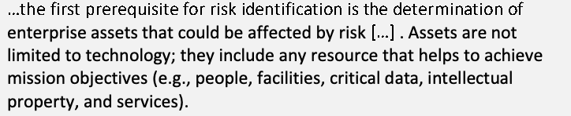
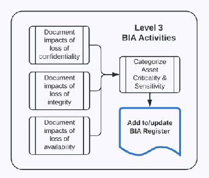
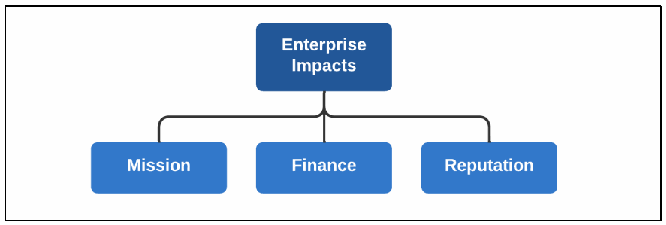
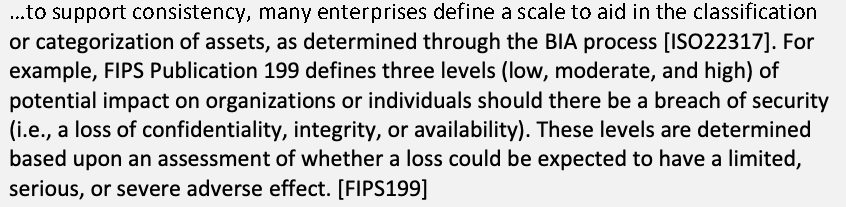
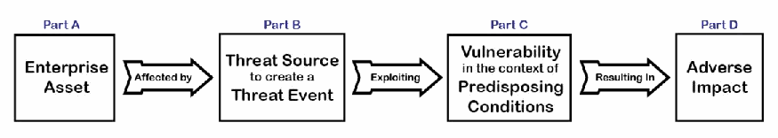
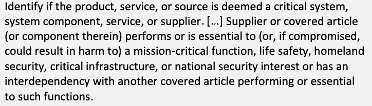

NIST IR 8286D 日本語訳
英語タイトル : Using Business Impact Analysis to Inform Risk Prioritization and Response日本語タイトル : リスクの優先順位付けと対応に情報を提供するための事業影響分析の活用
公開日 : 2025-02-26
原文URL : https://csrc.nist.gov/pubs/ir/8286/d/upd1/final
翻訳編集 : 自動生成（有志による非公式の日本語訳）, 原文取得日 : 2026-10-31, 訳文 : 262 / 263 ブロック
[要約] NIST IR 8286D は、事業影響分析（BIA）のプロセスを、あらゆる種類の損失がエンタープライズの使命に及ぼしうる影響を幅広く理解するために拡張する方法を説明する刊行物です。BIA はこれまで事業継続のための可用性要件を決定するために用いられてきましたが、本刊行物で説明するプロセスは、どの資産が使命目標の達成を可能にしているかを指導者が判断し、資産を重要かつ機微なものにしている要因を評価するのに役立ちます。エンタープライズの指導者は BIA への入力としてリスク指令（リスク選好度と許容度）を示し、システム所有者は BIA を適用して、資産の分類、影響値、重要または機微な資産の保護要件を策定します。BIA の出力は、NIST IR 8286 シリーズで説明されている ERM／CSRM の統合プロセスの基礎となり、情報セキュリティリスクに関する一貫した優先順位付け、対応、コミュニケーションを可能にします。
NIST Interagency Report NIST IR 8286D-upd1
NIST Interagency Report NIST IR 8286D-upd1
Using Business Impact Analysis to Inform Risk Prioritization and Response
リスクの優先順位付けと対応に情報を提供するための事業影響分析の活用
Stephen Quinn Nahla Ivy Julie Chua Matthew Barrett Larry Feldman Daniel Topper Greg Witte R. K. Gardner
Stephen Quinn Nahla Ivy Julie Chua Matthew Barrett Larry Feldman Daniel Topper Greg Witte R. K. Gardner
This publication is available free of charge from: https://doi.org/10.6028/NIST.IR.8286D-upd1
本刊行物は次の URL から無料で入手できます: https://doi.org/10.6028/NIST.IR.8286D-upd1
NIST Interagency Report NIST IR 8286D-upd1
NIST Interagency Report NIST IR 8286D-upd1
Using Business Impact Analysis to Inform Risk Prioritization and Response
リスクの優先順位付けと対応に情報を提供するための事業影響分析の活用
Stephen Quinn
Stephen Quinn
Computer Security Division
Computer Security Division
Information Technology Laboratory
Information Technology Laboratory
Nahla Ivy
Nahla Ivy
Enterprise Risk Management Office
Enterprise Risk Management Office
Office of Financial Resource Management
Office of Financial Resource Management
Julie Chua
Julie Chua
Office of Information Security
Office of Information Security
Office of the Chief Information Officer (OCIO)
Office of the Chief Information Officer (OCIO)
U.S. Department of Health and Human Services
U.S. Department of Health and Human Services
Matthew Barrett
Matthew Barrett
CyberESI Consulting Group, Inc.
CyberESI Consulting Group, Inc.
Baltimore, MD
Baltimore, MD
Larry Feldman Daniel Topper
Larry Feldman Daniel Topper
Greg Witte
Greg Witte
Huntington Ingalls Industries Annapolis Junction, MD
Huntington Ingalls Industries Annapolis Junction, MD
R. K. Gardner
R. K. Gardner
New World Technology Partners
New World Technology Partners
Annapolis, MD
Annapolis, MD
February 2025
2025 年 2 月
INCLUDES UPDATES AS OF 02-26-2025; SEE APPENDIX B
2025 年 2 月 26 日時点の更新を含みます。附属書 B を参照
［米国商務省の紋章。公的な標章のため、この非公式サイトには掲載していません。原本 PDF を参照してください。］
U.S. Department of Commerce Howard Lutnick, Secretary of Commerce
U.S. Department of Commerce Howard Lutnick, Secretary of Commerce
National Institute of Standards and Technology
National Institute of Standards and Technology
Craig Burkhardt, Acting Under Secretary of Commerce for Standards and Technology and Acting NIST Director
Craig Burkhardt, Acting Under Secretary of Commerce for Standards and Technology and Acting NIST Director
Certain commercial entities, equipment, or materials may be identified in this document in order to describe an experimental procedure or concept adequately. Such identification is not intended to imply recommendation or endorsement by the National Institute of Standards and Technology (NIST), nor is it intended to imply that the entities, materials, or equipment are necessarily the best available for the purpose.
本書では、実験手順や概念を十分に説明するために、特定の商業事業者、機器、または資材を挙げている場合があります。こうした記載は、米国国立標準技術研究所（NIST）による推奨や支持を意味するものではなく、また、挙げた事業者、資材、機器がその目的に最適であることを意味するものでもありません。
There may be references in this publication to other publications currently under development by NIST in accordance with its assigned statutory responsibilities. The information in this publication, including concepts and methodologies, may be used by federal agencies even before the completion of such companion publications. Thus, until each publication is completed, current requirements, guidelines, and procedures, where they exist, remain operative. For planning and transition purposes, federal agencies may wish to closely follow the development of these new publications by NIST.
本刊行物には、NIST が法令上の責務に従って現在作成中の他の刊行物への言及が含まれる場合があります。概念や方法論を含む本刊行物の情報は、そうした関連刊行物の完成前であっても、連邦機関が使用できます。したがって、各刊行物が完成するまでは、既存の要件、ガイドライン、手順がある場合は、それらが引き続き有効です。計画および移行のために、連邦機関は、これらの NIST の新しい刊行物の進捗を注意深く追うべきです。
Organizations are encouraged to review all draft publications during public comment periods and provide feedback to NIST. Many NIST cybersecurity publications, other than the ones noted above, are available at https://csrc.nist.gov/publications.
組織には、パブリックコメント期間中にすべてのドラフト刊行物を確認し、NIST にフィードバックを提供することが勧められています。上記以外の NIST のサイバーセキュリティ関連刊行物の多くは、https://csrc.nist.gov/publications で入手できます。
NIST Technical Series Policies
NIST Technical Series Policies
Copyright, Use, and Licensing Statements
Copyright, Use, and Licensing Statements
NIST Technical Series Publication Identifier Syntax
NIST Technical Series Publication Identifier Syntax
Publication History
Publication History
Approved by the NIST Editorial Review Board on 2025-02-24
Approved by the NIST Editorial Review Board on 2025-02-24
Supersedes NIST IR 8286D (November 2022) https://doi.org/10.6028/NIST.IR.8286D
Supersedes NIST IR 8286D (November 2022) https://doi.org/10.6028/NIST.IR.8286D
How to Cite this NIST Technical Series Publication:
How to Cite this NIST Technical Series Publication:
Quinn SD, Ivy N, Chua J, Barrett M, Feldman L, Topper D, Witte GA, Gardner RK (2025) Using Business Impact Analysis to Inform Risk Prioritization and Response. (National Institute of Standards and Technology, Gaithersburg, MD), NIST Interagency Report (IR) NIST IR 8286D-upd1. https://doi.org/10.6028/NIST.IR.8286D-upd1
Quinn SD, Ivy N, Chua J, Barrett M, Feldman L, Topper D, Witte GA, Gardner RK (2025) Using Business Impact Analysis to Inform Risk Prioritization and Response. (National Institute of Standards and Technology, Gaithersburg, MD), NIST Interagency Report (IR) NIST IR 8286D-upd1. https://doi.org/10.6028/NIST.IR.8286D-upd1
Author ORCID iDs
著者のORCID iD
Stephen D. Quinn: 0000-0003-1436-684X
Stephen D. Quinn: 0000-0003-1436-684X
Nahla Ivy: 0000-0003-4741-422X
Nahla Ivy: 0000-0003-4741-422X
Matthew Barrett: 0000-0002-7689-427X
Matthew Barrett: 0000-0002-7689-427X
Larry Feldman: 0000-0003-3888-027X
Larry Feldman: 0000-0003-3888-027X
Daniel Topper: 0000-0003-2612-7547
Daniel Topper: 0000-0003-2612-7547
Gregory A. Witte: 0000-0002-5425-1097
Gregory A. Witte: 0000-0002-5425-1097
Contact Information
連絡先情報
nistir8286@nist.gov
nistir8286@nist.gov
National Institute of Standards and Technology Attn: Applied Cybersecurity Division, Information Technology Laboratory 100 Bureau Drive (Mail Stop 2000) Gaithersburg, MD 20899-2000
National Institute of Standards and Technology Attn: Applied Cybersecurity Division, Information Technology Laboratory 100 Bureau Drive (Mail Stop 2000) Gaithersburg, MD 20899-2000
Additional Information
追加情報
Additional information about this publication is available at https://csrc.nist.gov/pubs/ir/8286/d/upd1/final, including related content, potential updates, and document history.
本刊行物に関する追加情報（関連コンテンツ、更新の可能性、文書の履歴を含む）は、https://csrc.nist.gov/pubs/ir/8286/d/upd1/final で入手できます。
All comments are subject to release under the Freedom of Information Act (FOIA).
すべてのコメントは、Freedom of Information Act（FOIA）に基づいて公開される可能性があります。
Abstract
要旨
While business impact analysis (BIA) has historically been used to determine availability requirements for business continuity, the process can be extended to provide a broad understanding of the potential impacts of any type of loss on the enterprise mission. The management of enterprise risk requires a comprehensive understanding of mission-essential functions (i.e., what must go right) and the potential risk scenarios that jeopardize those functions (i.e., what might go wrong). The process described in this publication helps leaders determine which assets enable the achievement of mission objectives and evaluate the factors that render assets as critical and sensitive. Based on those factors, enterprise leaders provide risk directives (i.e., risk appetite and tolerance) as input to the BIA. System owners then apply the BIA to developing asset categorization, impact values, and requirements for the protection of critical or sensitive assets. The output of the BIA is the foundation for the Enterprise Risk Management (ERM)/Cybersecurity Risk Management (CSRM) integration process, as described in the NIST Interagency Report (IR) 8286 series, and enables consistent prioritization, response, and communication regarding information security risk.
事業影響分析（BIA）は、これまで事業継続のための可用性要件を決定するために用いられてきましたが、このプロセスを拡張して、あらゆる種類の損失がエンタープライズの使命に及ぼしうる影響を幅広く理解することができます。エンタープライズリスクの管理には、使命に不可欠な機能（すなわち、何がうまくいかなければならないか）と、それらの機能を脅かすリスクシナリオ（すなわち、何がうまくいかない可能性があるか）についての包括的な理解が必要です。本刊行物で説明するプロセスは、どの資産が使命目標の達成を可能にしているかを指導者が判断し、資産を重要かつ機微なものにしている要因を評価するのに役立ちます。これらの要因に基づいて、エンタープライズの指導者は BIA への入力としてリスク指令（すなわち、リスク選好度とリスク許容度）を示します。システム所有者は、次に BIA を適用して、資産の分類、影響値、重要または機微な資産の保護要件を策定します。BIA の出力は、NIST Interagency Report（IR）8286 シリーズで説明されているエンタープライズリスクマネジメント（ERM）／サイバーセキュリティリスクマネジメント（CSRM）の統合プロセスの基礎となり、情報セキュリティリスクに関する一貫した優先順位付け、対応、コミュニケーションを可能にします。
Keywords
キーワード
business impact analysis; cybersecurity risk management; cybersecurity risk register; enterprise risk management; information and communications technology.
事業影響分析; サイバーセキュリティリスクマネジメント; サイバーセキュリティリスク登録簿; エンタープライズリスクマネジメント; 情報通信技術。
Reports on Computer Systems Technology
コンピュータシステム技術に関する報告書
The Information Technology Laboratory (ITL) at the National Institute of Standards and Technology (NIST) promotes the U.S. economy and public welfare by providing technical leadership for the Nation’s measurement and standards infrastructure. ITL develops tests, test methods, reference data, proof of concept implementations, and technical analyses to advance the development and productive use of information technology. ITL’s responsibilities include the development of management, administrative, technical, and physical standards and guidelines for the cost-effective security and privacy of other than national security-related information in federal information systems.
米国国立標準技術研究所（NIST）の情報技術研究所（ITL）は、国の計測・標準の基盤に対する技術的なリーダーシップを提供することで、米国経済と公共の福祉を促進しています。ITL は、情報技術の開発と生産的な利用を進めるため、テスト、テスト方法、参照データ、概念実証の実装、技術分析を開発しています。ITL の責務には、連邦情報システムにおける、国家安全保障に関するもの以外の情報について、経営上、管理上、技術上、物理上の費用対効果の高いセキュリティとプライバシーのための標準とガイドラインの策定が含まれます。
Audience
想定読者
The primary audience for this publication includes public- and private-sector cybersecurity professionals at all levels who understand cybersecurity but may be unfamiliar with the details of enterprise risk management (ERM). The secondary audience includes both federal and non-Federal Government corporate officers, high-level executives, ERM officers and staff members, and others who understand ERM but may be unfamiliar with the details of cybersecurity. All readers are expected to gain an improved understanding of how CSRM and ERM complement and relate to each other as well as the benefits of integrating their use.
本刊行物の主な想定読者は、サイバーセキュリティを理解しているものの、エンタープライズリスクマネジメント（ERM）の詳細には詳しくないかもしれない、官民のあらゆる階層のサイバーセキュリティ専門家です。副次的な想定読者は、ERM を理解しているものの、サイバーセキュリティの詳細には詳しくないかもしれない、連邦政府および連邦政府以外の企業の役員、経営幹部、ERM の担当者と職員、その他の人々です。すべての読者が、CSRM と ERM が互いにどのように補完し関連しているか、およびそれらを統合して用いることの利点について、理解を深められることが期待されます。
Patent Disclosure Notice
特許開示に関する通知
NOTICE: ITL has requested that holders of patent claims whose use may be required for compliance with the guidance or requirements of this publication disclose such patent claims to ITL. However, holders of patents are not obligated to respond to ITL calls for patents and ITL has not undertaken a patent search in order to identify which, if any, patents may apply to this publication.
通知: ITL は、本刊行物のガイダンスまたは要件への準拠に使用が必要となる可能性のある特許権の保有者に対し、当該特許権を ITL に開示するよう要請しています。ただし、特許権者には ITL からの特許の照会に応じる義務はなく、また ITL は、本刊行物に適用される可能性のある特許を特定するための特許調査を行っていません。
As of the date of publication and following call(s) for the identification of patent claims whose use may be required for compliance with the guidance or requirements of this publication, no such patent claims have been identified to ITL.
発行日の時点で、本刊行物のガイダンスまたは要件への準拠に使用が必要となる可能性のある特許権の特定を求めた後も、そのような特許権は ITL に対して特定されていません。
No representation is made or implied by ITL that licenses are not required to avoid patent infringement in the use of this publication.
ITL は、本刊行物の使用にあたり、特許侵害を避けるためにライセンスが不要であることを表明も示唆もしていません。
Table of Contents
目次
List of Tables
表の一覧
List of Figures
図の一覧
Acknowledgments
謝辞
The authors wish to thank all individuals, organizations, and enterprises that contributed to the creation of this document. This includes Lisa Carnahan, Jim Foti, Amy Mahn, Matt Scholl, Kevin Stine, and Isabel Van Wyk of NIST and Mat Heyman of Impresa Management Solutions. The authors appreciate the support of the United States Department of Health and Human Services and the Federal Cyber-ERM Community of Interest, including the following members who provided specific comments: John Antlitz, M. Creary, Scott S. Crumbaugh, L. Dix, Debra Elkins, Patrick Hampton, Dana Mason, Khairun Pannah, Katherine Polevitzky, R. Register, N. Rodriguez, Mikki Smith, and Jing Williams. The authors also thank Joel Crook of Consolidated Nuclear Security, LLC; John Irving of European Space Research and Technology Centre; Ryan Wagner of Google; Kelly Hood of Optic Cyber Solutions; and Steve Dance of RiskCentric; and individual commenters Simon Burson and Norman Marks.
著者は、本書の作成に貢献したすべての個人、組織、事業体に感謝します。これには、NIST の Lisa Carnahan、Jim Foti、Amy Mahn、Matt Scholl、Kevin Stine、Isabel Van Wyk と、Impresa Management Solutions の Mat Heyman が含まれます。著者は、United States Department of Health and Human Services と Federal Cyber-ERM Community of Interest の支援に感謝します。また、具体的なコメントを寄せた次のメンバーにも感謝します。John Antlitz、M. Creary、Scott S. Crumbaugh、L. Dix、Debra Elkins、Patrick Hampton、Dana Mason、Khairun Pannah、Katherine Polevitzky、R. Register、N. Rodriguez、Mikki Smith、Jing Williams。著者はさらに、Consolidated Nuclear Security, LLC の Joel Crook、European Space Research and Technology Centre の John Irving、Google の Ryan Wagner、Optic Cyber Solutions の Kelly Hood、RiskCentric の Steve Dance、ならびに個人としてコメントを寄せた Simon Burson と Norman Marks に感謝します。
Executive Summary
エグゼクティブサマリー
Risk is measured in terms of impact on enterprise mission, so it is vital to understand the various information and technology (IT) assets whose functions enable that mission. Each asset has a value to the enterprise. For government enterprises, many of those IT assets are key components for supporting critical services provided to citizens. For corporations, IT assets directly influence enterprise capital and valuation, and IT risks can have a direct impact on the balance sheet or budget. For each type of enterprise, it is both vital and challenging to determine the conditions that will truly impact a mission. Government agencies must provide critical services while adhering to priority directives from senior leaders. In the commercial world, mission priority is often driven by long-term goals and factors that might impact the next quarter’s earnings call. Therefore, it is highly important to continually analyze and understand the enterprise resources that enable enterprise objectives and that can be jeopardized by cybersecurity risks.
リスクはエンタープライズの使命への影響の観点で測られるため、その使命を可能にする機能を担う、さまざまな情報および技術（IT）資産を理解することが不可欠です。各資産は、エンタープライズにとっての価値を持っています。政府系のエンタープライズでは、これらの IT 資産の多くが、市民に提供される重要なサービスを支える主要な構成要素です。企業にとっては、IT 資産がエンタープライズの資本と評価額に直接影響し、IT リスクは貸借対照表や予算に直接影響します。どのような種類のエンタープライズでも、使命に真に影響する条件を判断することは、不可欠であると同時に困難でもあります。政府機関は、上級指導者からの優先指令に従いながら、重要なサービスを提供しなければなりません。民間の世界では、使命の優先順位は、長期的な目標や、次の四半期の決算説明会に影響しうる要因によって左右されることが多くあります。したがって、エンタープライズの目標を可能にし、サイバーセキュリティリスクによって脅かされうるエンタープライズのリソースを、継続的に分析して理解することが極めて重要です。
The NIST Interagency Report (IR) 8286 series has coalesced around the risk register as a construct for storing and a process for communicating risk data [NISTIR8286]. Another critical artifact of risk management that serves as both a construct and a means of communication with the risk register is the Business Impact Analysis (BIA) Register. The BIA examines the potential impacts associated with the loss or degradation of an enterprise’s technology-related assets based on a qualitative or quantitative assessment of the criticality and sensitivity of those assets and stores the results in the BIA Register. An asset criticality or resource dependency assessment identifies and prioritizes the information assets that support the enterprise’s critical missions. Similarly, assessments of asset sensitivity identify and prioritize information assets that store, process, or transmit information that must not be modified or disclosed to unauthorized parties. In the cybersecurity realm, the use of the BIA has historically been limited to calculations of quality-based and time-based objectives for incident handling (including continuity of operations and disaster recovery).
NIST Interagency Report（IR）8286 シリーズは、リスクデータを保存するための構成要素として、またリスクデータを伝達するためのプロセスとして、リスク登録簿を中心にまとまってきました [NISTIR8286]。リスクマネジメントのもう一つの重要な成果物であり、リスク登録簿との関係で構成要素と伝達手段の両方の役割を果たすのが、事業影響分析（BIA）登録簿です。BIA は、エンタープライズの技術関連資産の重要度と機微性の定性的または定量的な評価に基づき、それらの資産の喪失または劣化に伴う潜在的な影響を検討し、その結果を BIA 登録簿に保存します。資産の重要度またはリソース依存関係の評価では、エンタープライズの重要な使命を支える情報資産を特定し、優先順位を付けます。同様に、資産の機微性の評価では、認可されていない当事者に改変されたり開示されたりしてはならない情報を保存、処理、または伝送する情報資産を特定し、優先順位を付けます。サイバーセキュリティの領域では、BIA の使用は、これまで、インシデント対応（運用の継続と災害復旧を含む）における品質ベースおよび時間ベースの目標の算出に限られてきました。
Because the BIA serves as a nexus for understanding risk (which is the measurement of uncertainty on the mission), it provides a basis for risk appetite and tolerance values as part of the enterprise risk strategy.1 That guidance supports performance and risk metrics based on the relative value of enterprise assets to communicate and monitor Cybersecurity Risk Management2 (CSRM) activities, including measures determined to be key performance indicators (KPIs) and key risk indicators (KRIs). The BIA supports asset classification that drives requirements, risk communications, and monitoring.
BIA はリスク（使命に対する不確実性の尺度）を理解するための結節点となるため、エンタープライズのリスク戦略の一環として、リスク選好度とリスク許容度の値の根拠を提供します。1このガイダンスは、エンタープライズ資産の相対的な価値に基づくパフォーマンス指標とリスク指標を支え、主要業績評価指標（KPI）や主要リスク指標（KRI）として定められた尺度を含む、サイバーセキュリティリスクマネジメント2（CSRM）活動の伝達と監視を可能にします。BIA は、要件、リスクコミュニケーション、監視を方向づける資産の分類を支えます。
Expanding use of the BIA to include confidentiality and integrity considerations supports comprehensive risk analysis. The basis of asset valuation on enterprise impact helps to better align risk decisions to enterprise risk strategy. CSRM/ERM integration helps to complete the risk cycle by informing future iterations of impact analysis based on previous information gained through cybersecurity risk register (CSRR) aggregation, as detailed in NIST IR 8286C. As organizational and enterprise leaders gain an understanding of aggregate risk exposure and composite impact, that information helps adjust risk expectations (including business impact guidance to ensure an ongoing balance among asset value, resource optimization, and risk considerations).
BIA の使用を機密性と完全性の考慮にまで拡張することは、包括的なリスク分析を支えます。エンタープライズへの影響に基づいて資産を評価することは、リスクに関する意思決定をエンタープライズのリスク戦略により適切に整合させる助けとなります。NIST IR 8286C で詳述されているように、CSRM／ERM の統合は、サイバーセキュリティリスク登録簿（CSRR）の集約を通じて得られた以前の情報に基づく、将来の影響分析の反復に情報を提供することで、リスクサイクルを完結させる助けとなります。組織およびエンタープライズの指導者が集約されたリスクエクスポージャーと複合的な影響を理解するにつれ、その情報は、リスクへの期待（資産価値、リソースの最適化、リスクの考慮の間の継続的なバランスを確保するための事業影響に関するガイダンスを含む）を調整する助けとなります。
The BIA process enables system owners to record the benefits provided by an asset by considering the contribution to the enterprise, particularly in terms of mission, finance, and reputational aspects. Once informed about how each asset supports enterprise value, system owners can then work with risk managers to determine the implications of uncertainty on those assets.
BIA のプロセスにより、システム所有者は、特に使命、財務、評判の側面について、エンタープライズへの貢献を考慮して、資産がもたらす便益を記録できます。各資産がエンタープライズの価値をどのように支えているかを把握したシステム所有者は、続いてリスク管理者と協力して、それらの資産に関する不確実性が及ぼす影響を判断できます。
It is more critical than ever to have centralized and reliable asset information recorded in the BIA Register since enterprises rely on various types of information and communications technology (ICT) resources, which are increasingly targeted by adversaries. The BIA process provides information that can be consistently recorded in a centralized registry of important asset management information, such as system ownership, contact information for key stakeholders, and characteristics of the physical devices (or services). Since asset management is an important element of cybersecurity risk management, this information is quite valuable for protecting the asset, detecting cyber events, responding quickly to potential issues, and recovering services when necessary.
エンタープライズが、敵対者に標的にされることが増えているさまざまな種類の情報通信技術（ICT）リソースに依存しているため、集中管理された信頼できる資産情報を BIA 登録簿に記録しておくことが、これまで以上に重要になっています。BIA のプロセスは、システムの所有者、主要な関係者の連絡先情報、物理デバイス（またはサービス）の特性など、重要な資産管理情報の集中型の登録簿に一貫して記録できる情報を提供します。資産管理はサイバーセキュリティリスクマネジメントの重要な要素であるため、この情報は、資産の保護、サイバー事象の検知、潜在的な問題への迅速な対応、必要な場合のサービスの復旧に非常に有用です。
Public- and private-sector enterprises must maintain a continual understanding of potential business impacts, the risk conditions that might lead to those impacts, and the steps being taken to address those impacts (as recorded in various risk registers and, ultimately, in the Enterprise Risk Profile). In many cases, when a company or agency is asked about risks, they are actually being asked to describe potential impacts. Companies must describe the risk factors that could have a material adverse effect on the enterprise’s financial position, its ability to operate, or its corporate cash flow. Agencies must report to legislative and regulatory stakeholders about adverse impacts that could impair agency missions and funding. Use of the BIA methodology to categorize the criticality and sensitivity of enterprise assets enables effective risk management and the subsequent integration of reporting and monitoring at the enterprise level to ensure that risk and resource utilization are optimized in light of the value of those assets.
官民のエンタープライズは、潜在的な事業への影響、それらの影響につながりうるリスク状況、およびそれらの影響に対処するために講じている手順（さまざまなリスク登録簿に、最終的にはエンタープライズリスクプロファイルに記録されるもの）を、継続的に把握していなければなりません。多くの場合、企業や機関がリスクについて尋ねられるとき、実際には潜在的な影響を説明するよう求められています。企業は、エンタープライズの財務状況、事業運営能力、企業のキャッシュフローに重大な悪影響を及ぼしうるリスク要因を説明しなければなりません。機関は、機関の使命や資金調達を損なうおそれのある悪影響について、立法・規制の関係者に報告しなければなりません。エンタープライズ資産の重要度と機微性を分類するために BIA の方法論を用いることは、効果的なリスクマネジメントと、その後のエンタープライズレベルでの報告と監視の統合を可能にし、それらの資産の価値に照らしてリスクとリソース利用が最適化されることを確保します。
1. Introduction
1. はじめに
Risk is measured, at least in part, in terms of impact on the enterprise mission and the likelihood of events, so it is vital to understand the various information and communications technology (ICT) assets whose functions enable that mission, as well as any potential uncertainties that jeopardize those assets. Each asset has a value to the enterprise. For government enterprises, many of those ICT assets are key components for supporting critical services provided to citizens. For corporations, ICT assets directly influence enterprise capital and valuation, and ICT risks can directly impact the balance sheet or budget. For each type of enterprise, it can be challenging to determine what conditions will truly impact the mission. Today’s government agencies continue to provide critical services, yet they must also adhere to priority directives from senior leaders. In the commercial world, mission priority is often driven by long-term goals as well as impacts on the next quarter’s earnings call. Therefore, it is important to continually analyze and understand the enterprise resources that enable enterprise objectives and that can be jeopardized by cybersecurity risks.
リスクは、少なくとも部分的には、エンタープライズの使命への影響と事象の起こりやすさの観点で測られるため、その使命を可能にする機能を担う、さまざまな情報通信技術（ICT）資産と、それらの資産を脅かす潜在的な不確実性を理解することが不可欠です。各資産は、エンタープライズにとっての価値を持っています。政府系のエンタープライズでは、これらの ICT 資産の多くが、市民に提供される重要なサービスを支える主要な構成要素です。企業にとっては、ICT 資産がエンタープライズの資本と評価額に直接影響し、ICT リスクは貸借対照表や予算に直接影響します。どのような種類のエンタープライズでも、使命に真に影響する条件を判断することは困難な場合があります。今日の政府機関は、重要なサービスを提供し続けていますが、同時に上級指導者からの優先指令にも従わなければなりません。民間の世界では、使命の優先順位は、長期的な目標や、次の四半期の決算説明会への影響によって左右されることが多くあります。したがって、エンタープライズの目標を可能にし、サイバーセキュリティリスクによって脅かされうるエンタープライズのリソースを、継続的に分析して理解することが重要です。
The NIST Interagency Report (IR) 8286 series has coalesced around the risk register as a construct for storing and a process for communicating risk data [NISTIR8286]. The series of publications demonstrates how to better integrate cybersecurity with ERM. The series helps entities effectively quantify, finance, and drive their cybersecurity programs commensurate with enterprise risk exposure, as well as shareholder and stakeholder value. It highlights the need for ongoing bidirectional communication between ERM and risk programs, recognizing that risk disciplines both inform and receive direction from ERM. Specifically, the communication of risk appetite statements from the ERM portfolio is a way for risk programs to better identify and monitor risks using a variety of related methods, such as risk tolerance statements, key performance indicators, key risk indicators, and controls. The NIST IR 8286 series also formalizes the use of risk registers to communicate risks and risk responses between program and portfolio levels. It highlights industry best practices for coordination by elevating risks within an organization for oversight and escalating risks within an organization for higher-level ownership. NIST IR 8286 is supported by four supplemental IRs:
NIST Interagency Report（IR）8286 シリーズは、リスクデータを保存するための構成要素として、またリスクデータを伝達するためのプロセスとして、リスク登録簿を中心にまとまってきました [NISTIR8286]。この一連の刊行物は、サイバーセキュリティを ERM とより適切に統合する方法を示しています。このシリーズは、事業体が、エンタープライズのリスクエクスポージャー、ならびに株主およびステークホルダーにとっての価値に見合う形で、サイバーセキュリティプログラムを効果的に定量化し、資金手当てし、推進する助けとなります。リスクの各分野が ERM に情報を提供すると同時に ERM から指示を受けることを認識し、ERM とリスクプログラムの間の双方向の継続的なコミュニケーションの必要性を強調しています。具体的には、ERM ポートフォリオからリスク選好度の表明を伝達することは、リスクプログラムが、リスク許容度の表明、主要業績評価指標、主要リスク指標、管理策など、関連するさまざまな手法を用いてリスクをより適切に特定し監視するための手段となります。NIST IR 8286 シリーズは、プログラムレベルとポートフォリオレベルの間でリスクとリスク対応を伝達するためのリスク登録簿の使用も、正式なものとしています。また、組織内でリスクを監督のために引き上げ、より上位の責任者に回すためにエスカレーションするという、調整のための業界のベストプラクティスも強調しています。NIST IR 8286 は、次の 4 つの補足的な IR によって支えられています。
1.NIST IR 8286A [NISTIR8286A] details the context, scenario identification, and analysis of the likelihood and impacts of cybersecurity risk and methods to convey that risk information, such as cybersecurity risk registers (CSRRs) and risk detail records.
1.NIST IR 8286A [NISTIR8286A] は、サイバーセキュリティリスクのコンテキスト、シナリオの特定、起こりやすさと影響の分析、およびそのリスク情報を伝えるための手法（サイバーセキュリティリスク登録簿（CSRR）やリスク詳細記録など）を詳述しています。
2.NIST IR 8286B [NISTIR8286B] describes ways of applying risk analysis to prioritize cybersecurity risk, evaluate and select appropriate risk responses, and communicate risk activities as part of an enterprise CSRM strategy.
2.NIST IR 8286B [NISTIR8286B] は、サイバーセキュリティリスクの優先順位を付け、適切なリスク対応を評価して選択し、エンタープライズの CSRM 戦略の一環としてリスク活動を伝達するために、リスク分析を適用する方法を説明しています。
3.NIST IR 8286C [NISTIR8286C] describes processes for aggregating information from CSRM activities throughout the enterprise. As that information is integrated and harmonized, organizational and enterprise leaders monitor the achievement of risk objectives, consider any changes to risk strategy, and use the combined information to maintain awareness of risk factors and positive risks (or opportunities).
3.NIST IR 8286C [NISTIR8286C] は、エンタープライズ全体の CSRM 活動からの情報を集約するプロセスを説明しています。その情報が統合され調和されるにつれて、組織およびエンタープライズの指導者は、リスク目標の達成状況を監視し、リスク戦略の変更を検討し、統合された情報を用いてリスク要因とポジティブリスク（すなわち機会）への認識を維持します。
4.NIST IR 8286D (this report) describes the identification and management of risk as it propagates from system to organization and from organization to enterprise, which in turn better informs ERM deliberations. It expands typical business impact analysis discussions to inform risk prioritization and response by quantifying the organizational impact and enterprise consequences of compromised IT assets.
4.NIST IR 8286D（本報告書）は、リスクがシステムから組織へ、また組織からエンタープライズへと伝播する際の、リスクの特定と管理を説明しており、それによって ERM の審議により適切に情報が提供されます。危殆化した IT 資産が組織とエンタープライズにもたらす影響と結果を定量化することで、リスクの優先順位付けと対応に情報を提供するよう、一般的な事業影響分析の議論を拡張しています。
Another critical artifact of risk management that serves as both a construct and a means of communication with the risk register is the Business Impact Analysis (BIA) Register. The BIA examines the potential impact associated with the loss or degradation of an enterprise’s information assets based on a qualitative or quantitative assessment of the criticality and sensitivity of those assets. An asset criticality or resource dependency assessment identifies and prioritizes the information assets that support the enterprise’s critical missions. Similarly, assessments of asset sensitivity identify and prioritize resources that store, process, or transmit any information that must not be modified or disclosed to unauthorized parties.
リスクマネジメントのもう一つの重要な成果物であり、リスク登録簿との関係で構成要素と伝達手段の両方の役割を果たすのが、事業影響分析（BIA）登録簿です。BIA は、エンタープライズの情報資産の重要度と機微性の定性的または定量的な評価に基づき、それらの資産の喪失または劣化に伴う潜在的な影響を検討します。資産の重要度またはリソース依存関係の評価では、エンタープライズの重要な使命を支える情報資産を特定し、優先順位を付けます。同様に、資産の機微性の評価では、認可されていない当事者に改変されたり開示されたりしてはならない情報を保存、処理、または伝送するリソースを特定し、優先順位を付けます。
Identifying and Estimating Cybersecurity Risk for Enterprise Risk Management, NIST IR 8286A, points out that:
NIST IR 8286A『Identifying and Estimating Cybersecurity Risk for Enterprise Risk Management』は、次のように指摘しています。
…the first prerequisite for risk identification is the determination of enterprise assets that could be affected by risk […] . Assets are not limited to technology; they include any resource that helps to achieve mission objectives (e.g., people, facilities, critical data, intellectual property, and services).
原本PDFの抜粋画像

…リスク特定の最初の前提条件は、リスクの影響を受けうるエンタープライズ資産の判断です […]。資産は技術に限られません。使命目標の達成に役立つあらゆるリソース（例: 人、施設、重要なデータ、知的財産、サービス）が含まれます。
Section 2 (specifically subsection 2.2.1.1) of that NIST IR further describes BIA as a helpful process “to consistently identify, evaluate, record, and monitor the criticality and sensitivity of enterprise assets. The BIA categorization can, in turn, inform the establishment of risk tolerance levels.”
同 NIST IR の第 2 節（具体的には 2.2.1.1 項）は、BIA を「エンタープライズ資産の重要度と機微性を一貫して特定、評価、記録、監視する」有用なプロセスとして、さらに説明しています。「BIA の分類は、次に、リスク許容度の水準の確立の参考になります。」
1.1. Benefits of Extending the BIA for Risk Types
1.1. リスクの種類に対して BIA を拡張する利点
The BIA is broadly recognized as a proven method for business continuity and disaster recovery planning and prioritization. BIA processes and templates enable the discussion and documentation of recovery objectives and service delivery criteria for important business applications. Availability considerations, however, only comprise a portion of the types of cybersecurity risks that an enterprise faces. In fact, many recent attack patterns indicate that an adversary is likely to combine attack types. For example, a criminal might encrypt important company information (causing availability impact) while also threatening to disclose those same sensitive corporate records (causing confidentiality impact) unless a ransom is paid. A consideration of the potential harmful impacts of loss on important assets enables risk planning and prepares for the completion of cybersecurity risk registers (CSRRs), as described in this NIST IR 8286 series.
BIA は、事業継続と災害復旧の計画および優先順位付けのための実証された手法として広く認められています。BIA のプロセスとテンプレートにより、重要な業務アプリケーションの復旧目標とサービス提供の基準について議論し、文書化できます。しかし、可用性の考慮は、エンタープライズが直面するサイバーセキュリティリスクの種類の一部を構成するにすぎません。実際、最近の多くの攻撃パターンは、敵対者が複数の攻撃の種類を組み合わせる可能性が高いことを示しています。たとえば、犯罪者が企業の重要な情報を暗号化し（可用性への影響を生じさせ）、さらに身代金が支払われなければ、同じ機微な企業記録を開示すると脅す（機密性への影響を生じさせる）ことがあります。重要な資産の喪失がもたらす潜在的な有害な影響を検討することで、リスクの計画が可能になり、この NIST IR 8286 シリーズで説明されているサイバーセキュリティリスク登録簿（CSRR）の作成に備えられます。
Enterprise stakeholders can also use the BIA process to identify enterprise resources that use critical information types. In addition to internal reasons for protecting critical and sensitive information, enterprises may also need to categorize assets for mandatory external compliance. Many regulations and contractual requirements stipulate that certain critical and sensitive information must be protected, so the BIA determination helps organizations understand where those mandates apply.
エンタープライズの関係者は、BIA のプロセスを用いて、重要な情報の種類を使用するエンタープライズのリソースを特定することもできます。重要で機微な情報を保護するという内部的な理由に加えて、エンタープライズは、外部からの義務的なコンプライアンスのために資産を分類する必要がある場合もあります。多くの規制や契約上の要件が、特定の重要で機微な情報を保護しなければならないと定めているため、BIA の判断は、組織がそれらの義務がどこに適用されるかを理解する助けとなります。
The BIA provides a solid foundation for identifying, monitoring, and communicating about potential impacts related to the loss of confidentiality, integrity, and availability. This supports the process that has been described throughout the NIST IR 8286 series – applying an understanding of enterprise strategy and risk direction to guide cybersecurity risk management3 (CSRM) and to record and communicate CSRM activities in support of ERM objectives.
BIA は、機密性、完全性、可用性の喪失に関連する潜在的な影響を特定し、監視し、伝達するための確かな基盤を提供します。これは、NIST IR 8286 シリーズ全体で説明されてきたプロセス、すなわち、エンタープライズ戦略とリスクの方向性への理解を適用してサイバーセキュリティリスクマネジメント3（CSRM）を導き、ERM の目標を支えるために CSRM 活動を記録し伝達するプロセスを支えます。
1.2. Foundational Practices for Business Impact Analysis
1.2. 事業影響分析の基礎となる実践
To gain the enterprise benefits of BIAs for consistent prioritization and risk assessment, there must be a consistent application of the processes and forms used. When impact analysis is performed in a structured and repeatable manner, the impact assertions and resulting decisions are more reliable.4 To support a consistent analysis of business impact, senior leaders define clear criteria for criticality and sensitivity. These criteria should be reviewed periodically and adjusted as needed. Guidance should also direct those performing a BIA to consider the worst-case scenario when determining potential impacts, such as a disruption to an e-commerce website on the busiest day of the sales year.
一貫した優先順位付けとリスク評価というエンタープライズにとっての BIA の利点を得るには、使用するプロセスと様式を一貫して適用しなければなりません。影響分析が構造化された再現可能な方法で実施されると、影響に関する主張とそこから導かれる決定の信頼性が高まります。4事業影響の一貫した分析を支えるために、上級指導者は重要度と機微性の明確な基準を定めます。これらの基準は、定期的にレビューし、必要に応じて調整すべきです。また、ガイダンスでは、BIA を実施する者が、潜在的な影響を判断する際に、販売年度で最も繁忙な日の電子商取引ウェブサイトの中断のような、最悪のシナリオを考慮するよう指示すべきです。
As with many elements of risk management, it is usually more important to be consistent than to be exactly precise in analytic results. Even if the actual calculation of the business impact of a loss might not be exact, that figure can be adjusted through subsequent iterations, and an understanding of the relative priority and severity of a loss still enables effective decision-making.
リスクマネジメントの多くの要素と同様に、分析結果は正確であることよりも、一貫していることのほうが通常は重要です。損失が事業に与える影響の実際の計算が正確でなくても、その数値はその後の反復で調整でき、損失の相対的な優先度と深刻度を理解できれば、効果的な意思決定は可能です。
1.3. Document Structure
1.3. 文書の構成
The remainder of this document is organized into the following major sections:
本書の以降の部分は、次の主要な節で構成されています。
•Section 2 describes specific considerations for the documentation and analysis of business impacts that result in a full or partial loss of the confidentiality, integrity, or availability of a mission-essential resource.
•第 2 節では、使命に不可欠なリソースの機密性、完全性、可用性の全部または一部が失われた場合の事業影響の文書化と分析に関する、具体的な考慮事項を説明しています。
•Section 3 provides a conclusion that summarizes this report and points out relevant connections to other NIST publications, including companion documents from the NIST IR 8286 series.
•第 3 節では、本報告書を要約し、NIST IR 8286 シリーズの関連文書を含む NIST の他の刊行物との関連を指摘する結論を示しています。
•The References section provides links to external sites or publications that offer additional information.
•参考文献の節では、追加の情報を提供する外部サイトや刊行物へのリンクを示しています。
•Appendix A contains a list of the acronyms used in the document.
•附属書 A には、本書で使用する頭字語の一覧を示しています。
•Appendix B provides a change log for this document.
•附属書 B には、本書の変更履歴を示しています。
2. Cataloging and Categorizing Assets Based on Enterprise Value
2. エンタープライズにとっての価値に基づく資産の目録化と分類
Public- and private-sector enterprises use a significant array of assets to accomplish their missions. While the term “asset” may immediately call to mind technical equipment, assets cover a much broader set of resources. An asset may be tangible (e.g., a physical item such as hardware, firmware, computing platform, network device, or other technology component) or intangible (e.g., data, information, software, trademark, copyright, patent, intellectual property, or reputation). The value of an asset is driven by stakeholders based on the enterprise’s mission. Practitioners should keep in mind that intangible assets (e.g., reputation, public confidence, institutional knowledge, and intellectual property) are often impacted by attacks.
官民のエンタープライズは、使命を達成するために、非常に多様な資産を使用しています。「資産」という用語から技術的な機器がすぐに思い浮かぶかもしれませんが、資産ははるかに広範なリソースを含みます。資産は、有形のもの（例: ハードウェア、ファームウェア、コンピューティングプラットフォーム、ネットワークデバイス、その他の技術構成要素などの物理的な品目）であっても、無形のもの（例: データ、情報、ソフトウェア、商標、著作権、特許、知的財産、評判）であってもかまいません。資産の価値は、エンタープライズの使命に基づいて、関係者によって決まります。実務者は、無形資産（例: 評判、社会的信頼、組織の知識、知的財産）が攻撃によって影響を受けることが多いことを念頭に置くべきです。
2.1. Identification of Enterprise Business Asset Types
2.1. エンタープライズの事業資産の種類の特定
To inform risk identification and analysis, the reviewer must begin with the types of information that might be impacted. For ICT assets, those are primarily risks to information-related systems but also include operational technology that supports transactions, sensors, and cyber-physical control signals.5 Some examples are provided in Table 1.
リスクの特定と分析に情報を提供するには、レビュー担当者は、影響を受けうる情報の種類から始めなければなりません。ICT 資産の場合、それらは主に情報関連システムに対するリスクですが、取引、センサー、サイバーフィジカルの制御信号を支える運用技術も含まれます。5いくつかの例を表 1 に示します。
Table 1. Examples of Enterprise Business Asset Types
表 1. エンタープライズの事業資産の種類の例
| Asset Type | Description | Examples |
|---|---|---|
| Information-related Items (Tangible) | The physical assets needed to support operations, such as financial records, customer data, or supporting systems | Facilities, personnel, hardware, firmware, computing platform, network device, or other technology component |
| Information-related Items (Intangible) | General information needed to support operations, such as financial records, customer data, or supporting systems | Data, information, software, trademark, patent, intellectual property, image, or reputation |
| Transactions | Information related to or resulting from a specific business-related interaction | Product sale, agency service, non-profit grant provision |
| Control Signals | An electronic command intended to control the functions of an automated system or infrastructure | Command to close a cyber-physical valve, electronic message to close an electrical breaker |
| Sensor Readings | Information produced by dedicated device types to convert physical process variables into control signals to monitor or manage an automated system | Alarms and indicators (e.g., pipeline pressure, system temperature) |
| 資産の種類 | 説明 | 例 |
|---|---|---|
| 情報関連の品目（有形） | 財務記録、顧客データ、支援システムなど、運営を支えるために必要な物理的資産 | 施設、要員、ハードウェア、ファームウェア、コンピューティングプラットフォーム、ネットワークデバイス、その他の技術構成要素 |
| 情報関連の品目（無形） | 財務記録、顧客データ、支援システムなど、運営を支えるために必要な一般的な情報 | データ、情報、ソフトウェア、商標、特許、知的財産、画像、評判 |
| 取引 | 特定の事業関連のやり取りに関連する、またはその結果として生じる情報 | 製品の販売、機関のサービス、非営利団体の助成金の提供 |
| 制御信号 | 自動化されたシステムやインフラの機能を制御するための電子的なコマンド | サイバーフィジカルバルブを閉じるコマンド、電気遮断器を閉じる電子メッセージ |
| センサーの読み取り値 | 自動化されたシステムを監視または管理するために、物理プロセスの変数を制御信号に変換する専用デバイスが生成する情報 | アラームと指示値（例: パイプラインの圧力、システムの温度） |
2.2. The Business Impact Analysis Process
2.2. 事業影響分析のプロセス
To consider the possible impacts of loss on an asset, one must first determine the value of the asset to the enterprise. While the direct replacement costs of asset components are a factor in that valuation, an asset’s value is directly dependent on the extent to which it helps achieve the organization’s objectives (or to support other assets’ ability to do so). Understanding the enterprise value of an asset requires an understanding of “what needs to go right” to accomplish the mission.
資産の喪失がもたらしうる影響を検討するには、まず、その資産のエンタープライズにとっての価値を判断しなければなりません。資産の構成要素の直接的な交換費用はその評価の一要素ですが、資産の価値は、それが組織の目標の達成にどの程度役立つか（または他の資産がそれを行う能力をどの程度支えるか）に直接依存します。資産のエンタープライズにとっての価値を理解するには、使命を達成するために「何がうまくいく必要があるか」を理解する必要があります。
Analysis of potential impact needs to begin with consideration of the mission impact of a loss or degradation of the asset from an enterprise perspective. The interruption of, impairment of, or unauthorized disclosure from a key resource is likely to cause financial, reputational, and operational implications for the enterprise with potential fiscal, regulatory, or competition consequences. Through collaboration among leaders and operational staff, understanding the importance of the asset (including the purpose of the resource, potentially including the data types therein) will help inform risk analysis regarding confidentiality, integrity, and availability requirements.
潜在的な影響の分析は、エンタープライズの視点から、資産の喪失または劣化が使命に与える影響を考慮することから始める必要があります。主要なリソースの中断、障害、または認可されていない開示は、財務面、評判面、運用面でエンタープライズに影響を及ぼし、財政、規制、競争上の結果につながる可能性があります。指導者と運用担当者の連携を通じて、資産の重要性（リソースの目的を含み、そこに含まれるデータの種類を含む場合もある）を理解することは、機密性、完全性、可用性の要件に関するリスク分析に情報を提供する助けとなります。
Fig. 1 illustrates the integration of the business impact analysis process with the cybersecurity risk management (CSRM) processes described throughout the NIST IR 8286 series.
図 1 は、事業影響分析プロセスと、NIST IR 8286 シリーズ全体で説明されているサイバーセキュリティリスクマネジメント（CSRM）プロセスとの統合を示しています。
![Flowchart in three horizontal bands labeled Enterprise Level (Level 1), Organization Level (Level 2), and System Level (Level 3), with step areas marked A to F. A (Level 1): Enterprise Mission Goals and Obj. → Mission / Business-Critical Functions, which contain Systems / Services / Data Enabling the Mission, which contain Other Assets and Dependencies → Level 1 BIA Activities add to/update BIA Register → B: Level 1 executives define / refine risk appetite statements. From B a line goes down to Level 2: Level 2 Leader interprets risk appetite statements → Level 1 / Level 2 leader defines risk tolerance statements, which leads down to C. C (Level 3): Level 3 BIA Activities (See Figure 2) → Add to / update BIA Register → D: System Owners Interpret Risk Tolerance → Identify Risk Scenarios → Assess Likelihood & Impact → decision "Risk within tolerance?". Yes → Provide feedback for risk tolerance adjustment → Update Cybersecurity Risk Registers. No → "Can risk be brought within tolerance?"; Yes → Apply mitigation or risk transfer, which returns to Identify Risk Scenarios; No → "Does tolerance need refinement?", whose Yes and No lines return up to the Level 2 tolerance statements. Update Cybersecurity Risk Registers → E (Level 2): Aggregate and Normalize Cybersecurity Risk Registers → F (Level 1): Enterprise Risk Register / Enterprise Risk Profile, which feeds back to B.](assets/ir-8286dupd1/p0014-figure-01.png)
企業レベル（レベル 1）、組織レベル（レベル 2）、システムレベル（レベル 3）の 3 つの帯に分かれた流れ図で、手順の領域に A～F の記号が付いています。A（レベル 1）：企業のミッションの目標と目的 → ミッション・業務上不可欠な機能（その中にミッションを可能にするシステム・サービス・データ、さらにその中にその他の資産と依存関係）→ レベル 1 の BIA 活動による BIA 登録簿への追加・更新 → B：レベル 1 の経営幹部がリスクアペタイト・ステートメントを定義・改善します。B からレベル 2 へ線が下り、レベル 2 のリーダーがリスクアペタイト・ステートメントを解釈し → レベル 1・レベル 2 のリーダーがリスク許容度ステートメントを定義し、それが C へつながります。C（レベル 3）：レベル 3 の BIA 活動（図 2 参照）→ BIA 登録簿への追加・更新 → D：システムオーナーによるリスク許容度の解釈 → リスクシナリオの特定 → 発生可能性と影響の評価 → 判断「リスクは許容範囲内か？」。はい → リスク許容度調整のためのフィードバックの提供 → サイバーセキュリティリスク登録簿の更新。いいえ → 「リスクを許容範囲内に収められるか？」；はい → 緩和策またはリスク移転の適用（リスクシナリオの特定へ戻る）；いいえ → 「許容度の見直しが必要か？」で、その「はい」「いいえ」の線はレベル 2 のリスク許容度ステートメントへ戻ります。サイバーセキュリティリスク登録簿の更新 → E（レベル 2）：サイバーセキュリティリスク登録簿の集約と正規化 → F（レベル 1）：企業リスク登録簿・企業リスクプロファイルで、これが B へ戻ります。
Fig. 1. Integration of the BIA Process with Cybersecurity Risk Management
図 1. BIA プロセスとサイバーセキュリティリスクマネジメントの統合
BIA activities, described in more detail below, should be performed on the enterprise and system levels (i.e., Level 1 and Level 3). The analysis is highly dependent on Level 2, as depicted in Step E of Fig. 1. The process in Fig. 1 is described below:
BIA 活動は、以下でさらに詳しく説明するとおり、エンタープライズレベルとシステムレベル（すなわち、レベル 1 とレベル 3）で実施すべきです。分析は、図 1 のステップ E に示すとおり、レベル 2 に大きく依存します。図 1 のプロセスは、以下のとおりです。
•Step A – Based on the enterprise mission, executives identify the products and business processes that are essential to the successful operation of the enterprise. Based on that list, the executives and senior leaders identify the enterprise-level assets6 that enable those functions. The identification of enterprise-level assets should consider the interdependencies of systems and assets. Those assets inherit the criticality/priority of the functions they support.
•ステップ A – エンタープライズの使命に基づき、経営幹部は、エンタープライズの運営の成功に不可欠な製品と業務プロセスを特定します。その一覧に基づき、経営幹部と上級指導者は、それらの機能を可能にするエンタープライズレベルの資産6を特定します。エンタープライズレベルの資産の特定では、システムと資産の相互依存関係を考慮すべきです。これらの資産は、それが支える機能の重要度／優先度を引き継ぎます。
•Step B – Leaders establish and communicate the risk appetite associated with those enterprise assets, and organizational managers determine the resulting risk tolerance.
•ステップ B – 指導者は、それらのエンタープライズ資産に関連するリスク選好度を確立して伝達し、組織の管理者は、そこから導かれるリスク許容度を決定します。
•Step C – As part of the CSRM process, the system owner will determine the extent to which every system or activity enables a mission- or business-critical function (as illustrated in Fig. 2).
•ステップ C – CSRM プロセスの一環として、システム所有者は、すべてのシステムまたは活動が、使命上または事業上重要な機能をどの程度可能にしているかを判断します（図 2 に示すとおり）。

「Level 3 BIA Activities（レベル 3 の BIA 活動）」と題した図です。左側の 3 つの箱「機密性の喪失の影響を文書化」「完全性の喪失の影響を文書化」「可用性の喪失の影響を文書化」が合流して「資産の重要度と機微度の分類」へ矢印でつながり、そこから下の文書形の「BIA 登録簿への追加・更新」を指しています。
Fig. 2. Level 3 BIA Activities
図 2. レベル 3 の BIA 活動
The criticality and priority direction from leaders, expressed through risk appetite and risk tolerance statements (Step B), is used to help determine what the impact of losses would be on confidentiality, integrity, or availability. That impact understanding and the basis for those determinations are recorded in the system BIA Register.7
リスク選好度とリスク許容度の表明（ステップ B）を通じて示される、指導者からの重要度と優先度に関する指示は、機密性、完全性、可用性の喪失の影響がどの程度になるかを判断するのに役立てられます。その影響の理解と、それらの判断の根拠は、システムの BIA 登録簿に記録されます。7
•Step D – The analysis and results provide the input into the CSRM process illustrated in the diagram and described in NIST IRs 8286A, 8286B, and 8286C.
•ステップ D – 分析と結果は、図に示され、NIST IR 8286A、8286B、8286C で説明されている CSRM プロセスへの入力となります。
•Step E – Residual risks, particularly those that impact critical and sensitive resources, are highlighted in the Level 2 risk registers as those CSRRs are normalized and aggregated. Of important note is that cybersecurity is one component of technology risk that feeds operational risks (OpRisk).
•ステップ E – 残余リスク、特に重要で機微なリソースに影響するものは、それらの CSRR が正規化・集約される際に、レベル 2 のリスク登録簿で強調されます。重要な点として、サイバーセキュリティは、運用リスク（OpRisk）の要因となる技術リスクの構成要素の一つです。
•Step F – Enterprise leaders consider the results of ongoing risk activities reported through Level 2 CSRRs as integrated into an Enterprise Cybersecurity Risk Register (E-CSRR) and assess the aggregate impact of the Level 3 and Level 2 risks. This understanding of the composite impact on mission/business-critical functions (including OpRisk) is used to prioritize risk response based on enterprise finance, mission, and reputation consequences.8 Composite understanding also helps to confirm that risks are within the stated risk appetite or to identify necessary adjustments (e.g., implementing controls, risk mitigation). If adjustments are necessary, an action plan is created that will result in the appropriate increase or decrease of risk appetite to achieve the appropriate impact levels.
•ステップ F – エンタープライズの指導者は、エンタープライズサイバーセキュリティリスク登録簿（E-CSRR）に統合された、レベル 2 の CSRR を通じて報告される継続的なリスク活動の結果を検討し、レベル 3 とレベル 2 のリスクの集約された影響を評価します。（OpRisk を含む）使命上／事業上重要な機能への複合的な影響についてのこの理解は、エンタープライズの財務、使命、評判への結果に基づいてリスク対応の優先順位を付けるために用いられます。8複合的な理解は、リスクが表明されたリスク選好度の範囲内にあることの確認や、必要な調整（例: 管理策の実装、リスク低減）の特定にも役立ちます。調整が必要な場合は、適切な影響水準を達成するために、リスク選好度を適切に引き上げ、または引き下げることになる行動計画が作成されます。
The BIA activities described in Fig. 1 Steps A and C provide an opportunity to record information about enterprise assets, their value, and their relationship to enterprise risks. This asset management information supports recommendations from many risk management frameworks, including several from NIST, that encourage the use of an asset registry or repository to provide centralized knowledge management about the technology and data used to support the enterprise mission. For example, Cybersecurity Framework outcomes within the Asset Management (ID.AM) Category support an asset inventory including hardware, software, services, systems, and data and corresponding metadata. The Privacy Framework category “Inventory and Mapping” (ID.IM-P) includes inventory outcomes for systems, products, services, organizational roles, data actions and their purposes, data elements, and data processing components. Understanding the many types of assets in use by and for the enterprise helps to evaluate the potential consequences of a loss and supports effective risk response and monitoring.
図 1 のステップ A と C で説明されている BIA 活動は、エンタープライズ資産、その価値、エンタープライズのリスクとの関係に関する情報を記録する機会となります。この資産管理情報は、NIST のいくつかのものを含む多くのリスクマネジメントフレームワークからの、エンタープライズの使命を支える技術とデータに関する集中的なナレッジマネジメントを提供するために、資産の登録簿またはリポジトリを使用することを推奨する提言を支えます。たとえば、サイバーセキュリティフレームワークの資産管理（ID.AM）カテゴリの成果は、ハードウェア、ソフトウェア、サービス、システム、データ、および対応するメタデータを含む資産目録を支えます。プライバシーフレームワークのカテゴリ「Inventory and Mapping」（ID.IM-P）には、システム、製品、サービス、組織の役割、データアクションとその目的、データ要素、データ処理構成要素に関する目録の成果が含まれます。エンタープライズが使用する、またはエンタープライズのために使用されている多くの種類の資産を理解することは、喪失の潜在的な結果を評価する助けとなり、効果的なリスク対応と監視を支えます。
Once practitioners have determined the relative importance of various assets to the enterprise mission, they can evaluate the impact of a partial or full loss of confidentiality, integrity, or availability of those assets. As with other CSRM elements, this analysis (Step C) will be iterative in that impact analysis will support risk identification, and the understanding of potential risks informs impact determination (Step D). As system-level and organization-level CSRRs are aggregated and correlated (Step E), enterprise risk managers will use the composite set of information to determine the accuracy of previous risk analyses and assumptions. Specifically, risk management plans and results, as portrayed through the aggregated risk registers, provide details regarding residual risk, including the anticipated enterprise exposure. The integrated understanding of potential exposure – financial, missional, and reputational – is recorded in the Enterprise Risk Profile (ERP) and helps enterprise leadership make informed risk decisions. That enterprise-level understanding also provides leaders with valuable information to support the next iteration of the CSRM cycle through criteria for asset classification, past performances to inform quantifiable impact analysis, and a refined determination (Step B) of security requirements and risk appetite for various asset classes.
実務者は、さまざまな資産のエンタープライズの使命に対する相対的な重要性を判断したら、それらの資産の機密性、完全性、可用性の一部または全部が失われた場合の影響を評価できます。他の CSRM の要素と同様に、この分析（ステップ C）は反復的です。影響分析がリスクの特定を支え、潜在的なリスクの理解が影響の判断に情報を提供する（ステップ D）ためです。システムレベルと組織レベルの CSRR が集約され、相関付けられる（ステップ E）につれて、エンタープライズのリスク管理者は、統合された情報一式を用いて、以前のリスク分析と前提の正確性を判断します。具体的には、集約されたリスク登録簿によって示されるリスクマネジメント計画と結果から、予想されるエンタープライズのエクスポージャーを含む残余リスクの詳細が得られます。財務、使命、評判にわたる潜在的なエクスポージャーの統合された理解は、エンタープライズリスクプロファイル（ERP）に記録され、エンタープライズのリーダーシップが情報に基づくリスクの意思決定を行う助けとなります。そのエンタープライズレベルの理解は、資産分類の基準、定量化可能な影響分析に情報を提供する過去のパフォーマンス、さまざまな資産クラスに対するセキュリティ要件とリスク選好度の改善された判断（ステップ B）を通じて、CSRM サイクルの次の反復を支える貴重な情報も指導者に提供します。
This cycle enables an equilibrium that helps to balance the value of enterprise assets with an optimization of resources for operating and protecting those assets given what is known about the risks to them. Knowledge of asset value is gained throughout the life cycle through aggregated risk information, improving leaders’ understanding of the potential impact of losses to key assets. The value that is recorded in the BIA may extend well beyond replacement costs (a traditional measure of cost). For example, while one can calculate the direct cost of research and development underlying a new product offering, the long-term losses of the potential theft of that intellectual property could have more far-reaching impacts, including future revenue, share prices, enterprise reputation, and competitive advantage.
このサイクルは、エンタープライズ資産の価値と、それらの資産へのリスクについて分かっていることを踏まえた、資産の運用と保護のためのリソースの最適化とのバランスをとる助けとなる均衡を可能にします。資産の価値に関する知識は、集約されたリスク情報を通じてライフサイクル全体にわたって得られ、重要な資産の喪失がもたらす潜在的な影響についての指導者の理解を向上させます。BIA に記録される価値は、（コストの従来の尺度である）交換費用をはるかに超える場合があります。たとえば、新製品の提供の基礎となる研究開発の直接費用は計算できますが、その知的財産が盗まれた場合の長期的な損失は、将来の収益、株価、エンタープライズの評判、競争上の優位性など、より広範な影響を及ぼす可能性があります。
It is important to remember that although Fig. 1 and Fig. 2 show a high-level and serial process for managing risk, actual CSRM/ERM integration is very dynamic and is rarely this simple. Risk conditions change frequently and drastically, so risk managers throughout the enterprise must stay in close communication and be prepared for out-of-cycle adjustments.
図 1 と図 2 はリスクを管理するためのハイレベルで直列的なプロセスを示していますが、実際の CSRM／ERM の統合は非常に動的であり、これほど単純であることはまれだということを覚えておくことが重要です。リスクの状況は頻繁かつ急激に変化するため、エンタープライズ全体のリスク管理者は、密接に連絡を取り合い、周期外の調整に備えなければなりません。
2.3. Determining Asset Value to Support CSRM Activities
2.3. CSRM 活動を支える資産価値の判断
Consistent asset valuation and impact analyses are important elements of enterprise risk strategy. Enterprise leaders and their supporting managers review the enterprise mission objectives and expected outcomes to develop the risk management strategy for the enterprise. These strategic considerations then provide input to consider and calculate the harm that would occur if those benefits were reduced or eliminated. The BIA process provides that consistent model for determining and documenting the intended value of an asset and the potential harm of a loss to that asset. The BIA enables the consideration of numerous types of assets that enable the mission, many of which are related to the correct functioning of operational technology and cyber-physical systems. It is important to continually evaluate the role of various types of ICT while considering the harmful effects of an incident that might degrade or disrupt enterprise capabilities or that might have deleterious effects on the enterprise’s reputation or finances. For example, traditional information technology is almost always important, but it can be equally important to ensure that a manufacturing system operates properly or that chemicals flow safely throughout an industrial plant. Elements that enable both data and control signals should be included in the BIA.
一貫した資産評価と影響分析は、エンタープライズのリスク戦略の重要な要素です。エンタープライズの指導者と、それを支える管理者は、エンタープライズの使命目標と期待される成果をレビューして、エンタープライズのリスクマネジメント戦略を策定します。これらの戦略的な考慮事項は、続いて、それらの便益が減少または失われた場合に生じる損害を検討し、算定するための入力となります。BIA のプロセスは、資産の意図された価値と、その資産の喪失がもたらす潜在的な損害を判断し文書化するための、一貫したモデルを提供します。BIA により、使命を可能にする多数の種類の資産を検討でき、その多くは運用技術やサイバーフィジカルシステムの正しい機能に関連しています。エンタープライズの能力を低下または中断させるインシデント、あるいはエンタープライズの評判や財務に有害な影響を及ぼすインシデントがもたらす有害な影響を検討する際には、さまざまな種類の ICT の役割を継続的に評価することが重要です。たとえば、従来の情報技術はほぼ常に重要ですが、製造システムが適切に動作すること、あるいは産業プラント全体で化学物質が安全に流れることを確保することも、同様に重要になる場合があります。データと制御信号の両方を可能にする要素を、BIA に含めるべきです。
By recording the benefits provided by an asset in light of its contribution to the enterprise, the potential impacts of a loss to those assets can be determined (see Fig. 3), particularly in terms of:
資産がエンタープライズへの貢献に照らして提供する便益を記録することで、それらの資産の喪失がもたらす潜在的な影響を、特に次の観点から判断できます（図 3 を参照）。
•Mission – Including direct or indirect contributions to corporate or agency products and services that support enterprise objectives
•使命 – エンタープライズの目標を支える企業または機関の製品とサービスへの、直接的または間接的な貢献を含む
•Finance – Benefits that will improve the enterprise’s earnings (e.g., net revenue or return on investment for a government entity) or that will support fiscal capital and free cash flow for a business
•財務 – エンタープライズの収益（例: 政府機関にとっての純収入や投資収益率）を改善する、または企業の財政的資本とフリーキャッシュフローを支える便益
•Reputation – Attributes that enable stakeholders (e.g., citizens, shareholders, regulators, partners) to view the enterprise in a favorable light and contribute to its well-being
•評判 – 関係者（例: 市民、株主、規制当局、パートナー）がエンタープライズを好意的に見て、その健全性に寄与することを可能にする属性

木構造の図です。上の箱「Enterprise Impacts（企業への影響）」から、「Mission（ミッション）」「Finance（財務）」「Reputation（評判）」の 3 つの箱に枝分かれしています。
Fig. 3. Impacts of Enterprise Assets for a Business or Agency
図 3. 事業体または機関にとってのエンタープライズ資産の影響
By documenting the harmful impacts of enterprise asset loss, the BIA provides important input into the information security risk assessment process.9
エンタープライズ資産の喪失がもたらす有害な影響を文書化することで、BIA は情報セキュリティリスク評価プロセスへの重要な入力を提供します。9
2.4. Determining Loss Scenarios and Their Consequences
2.4. 損失シナリオとその結果の判断
Historically, the BIA provides a consistent method for considering the impacts of disruptions (i.e., partial or full loss of availability) on the delivery of products and services. While disruption is an important impact to consider, the factors described above highlight the need to also consider high-level impacts from confidentiality and integrity loss. This high-level set of loss scenarios is related to but separate from the detailed risk scenarios that occur as part of the cybersecurity risk management (CSRM) process.
従来、BIA は、混乱（すなわち、可用性の一部または全部の喪失）が製品とサービスの提供に及ぼす影響を検討するための一貫した方法を提供してきました。混乱は検討すべき重要な影響ですが、上記の要因は、機密性と完全性の喪失によるハイレベルな影響も検討する必要があることを示しています。このハイレベルな損失シナリオの集合は、サイバーセキュリティリスクマネジメント（CSRM）プロセスの一部として生じる詳細なリスクシナリオと関連していますが、別のものです。
In preparation for the BIA, the system owner will determine sources of loss to the asset being discussed.10 Threat modeling processes, such as the OCTAVE Allegro method, may help to develop scenarios about the impacts of critical or sensitive data being disclosed, modified, interrupted, or destroyed [OCTAVE]. These loss scenarios consider the enterprise risk strategy, leadership’s risk appetite and tolerance, and the mission, finance, and reputation factors described in Sec. 2.3.
BIA の準備として、システム所有者は、議論の対象となる資産に対する損失の原因を判断します。10OCTAVE Allegro 手法のような脅威モデリングプロセスは、重要または機微なデータが開示、改変、中断、または破壊された場合の影響に関するシナリオの策定に役立つ場合があります [OCTAVE]。これらの損失シナリオは、エンタープライズのリスク戦略、リーダーシップのリスク選好度とリスク許容度、および 2.3 節で説明した使命、財務、評判の要因を考慮します。
International Organization for Standardization (ISO) Technical Specification (TS) 22317:2021, Security and resilience – Business continuity management systems – Guidelines for business impact analysis, states,
International Organization for Standardization（ISO）Technical Specification（TS）22317:2021『Security and resilience – Business continuity management systems – Guidelines for business impact analysis』は、次のように述べています。
…to support consistency, many enterprises define a scale to aid in the classification or categorization of assets, as determined through the BIA process [ISO22317]. For example, FIPS Publication 199 defines three levels (low, moderate, and high) of potential impact on organizations or individuals should there be a breach of security (i.e., a loss of confidentiality, integrity, or availability). These levels are determined based upon an assessment of whether a loss could be expected to have a limited, serious, or severe adverse effect. [FIPS199]
原本PDFの抜粋画像

…一貫性を支えるために、多くのエンタープライズは、BIA プロセスを通じて判断される資産の分類または区分を助ける尺度を定義しています [ISO22317]。たとえば、FIPS Publication 199 は、セキュリティ侵害（すなわち、機密性、完全性、可用性の喪失）が起きた場合の、組織または個人への潜在的な影響について、3 つの水準（低、中、高）を定義しています。これらの水準は、喪失が限定的な、重大な、または深刻な悪影響を及ぼすと予想されるかどうかの評価に基づいて決定されます。[FIPS199]
Loss scenarios should reflect partial as well as complete losses. It is important to analyze “graceful degradation” scenarios and conditions under which assets continue to function but do so in a diminished or limited capacity. As described above, these “partial” impacts include confidentiality and integrity issues as well as availability. The BIA also offers the opportunity to evaluate the potential impact of the timing of a loss event (e.g., threat event frequency, latency, and duration), which can significantly influence the harm that may result.
損失シナリオは、完全な喪失だけでなく部分的な喪失も反映すべきです。「グレースフルデグラデーション」のシナリオ、すなわち資産は引き続き機能するものの、低下した、または限定された能力で機能する状況を分析することが重要です。上述のとおり、これらの「部分的な」影響には、可用性だけでなく、機密性と完全性の問題も含まれます。BIA は、損失事象が生じる時期（例: 脅威事象の頻度、潜伏期間、継続期間）が及ぼしうる潜在的な影響を評価する機会も提供し、これらは結果として生じる損害に大きく影響しうるものです。
Ultimately, these loss scenarios will provide input into the CSRM process, including risk scenario identification. NIST IR 8286A describes the need for risk identification as part of a broader risk assessment, including for information security risk. It frames risk identification in terms of four necessary inputs (parts A through D, as shown in Fig. 4) that should be recorded in the risk description cell of a CSRR. Combining these elements into a risk scenario helps to provide the full context of a potential loss event. The use of this scenario-based approach helps ensure comprehensive risk identification by considering many types of physical and logical events that might occur.
最終的に、これらの損失シナリオは、リスクシナリオの特定を含む CSRM プロセスへの入力となります。NIST IR 8286A は、情報セキュリティリスクを含む、より広範なリスク評価の一環としてのリスクの特定の必要性を説明しています。この文書は、リスクの特定を、CSRR のリスク説明欄に記録すべき 4 つの必要な入力（図 4 に示す A から D の部分）の観点から整理しています。これらの要素を組み合わせてリスクシナリオを作成することで、潜在的な損失事象の全体的な状況を把握しやすくなります。このシナリオベースのアプローチを用いることで、発生しうる多くの種類の物理的・論理的事象を考慮し、包括的なリスクの特定を確保する助けとなります。

左から右へ 4 つの箱が並び、それぞれ上にラベルがあります。Part A「企業資産（Enterprise Asset）」、Part B「脅威事象を生じさせる脅威源（Threat Source to create a Threat Event）」、Part C「素因となる条件の文脈における脆弱性（Vulnerability in the context of Predisposing Conditions）」、Part D「有害な影響（Adverse Impact）」です。箱の間の矢印には「Affected by（影響を受ける）」「Exploiting（悪用して）」「Resulting In（結果として）」と記されています。
Fig. 4. Elements of Information Risk Identification (from NIST IR 8286A)
図 4. 情報リスク特定の要素（NIST IR 8286A より）
The completion of the risk description column is composed of four activities that are detailed in NIST IR 8286A, Subsections 2.2.1 through 2.2.4. The activities include:
リスク説明欄の記入は、NIST IR 8286A の 2.2.1 項から 2.2.4 項に詳述されている 4 つの活動で構成されます。この活動には次のものが含まれます。
•Part A – Identification of the organization’s relevant assets and their valuation
•パート A – 組織の関連資産と、その評価の特定
•Part B – Determination of potential threats that might jeopardize the confidentiality, integrity, and availability of those assets
•パート B – それらの資産の機密性、完全性、可用性を脅かしうる潜在的な脅威の判断
•Part C – Consideration of vulnerabilities or other predisposing conditions of assets that make a threat event possible
•パート C – 脅威事象を可能にする、資産の脆弱性またはその他の素因の考慮
•Part D – High-level evaluation of the potential consequences if the threat source (part B) exploits the weakness (part C) against the organizational asset (part A)
•パート D – 脅威源（パート B）が組織の資産（パート A）に対して弱点（パート C）を悪用した場合の、潜在的な結果のハイレベルな評価
Information learned while developing the loss scenarios helps to complete Part D of the risk scenario development, as depicted in Fig. 4. By determining the various adverse impacts that might occur – whether by intentional attacks, natural events, or inadvertent errors – the enterprise will be able to support effective assessment, response, communications, and monitoring of information security risks. Notably, the goal is not to determine the probability that such a risk could occur since that exercise is part of risk analysis. Rather, the analysis of business impact is to determine what the various effects might be in order to enable risk managers to decide how critical and sensitive a particular business system is. Similar considerations apply to cyber-physical systems and operational technologies.
損失シナリオの策定中に得られた情報は、図 4 に示すリスクシナリオ策定のパート D を完成させる助けとなります。意図的な攻撃、自然事象、不注意による誤りのいずれによるものであれ、発生しうるさまざまな悪影響を判断することで、エンタープライズは、情報セキュリティリスクの効果的な評価、対応、コミュニケーション、監視を支えられるようになります。特に、目標は、そのようなリスクが発生する確率を判断することではありません。その作業はリスク分析の一部だからです。むしろ、事業影響の分析は、リスク管理者が特定の業務システムがどの程度重要で機微であるかを判断できるよう、さまざまな影響がどのようなものになりうるかを判断するためのものです。サイバーフィジカルシステムや運用技術にも、同様の考慮事項が当てはまります。
The risk management process relies on this foundation of asset categorization, enabling a tailored and cost-effective approach to balancing risk and reward. Business impact drives categorization (sometimes called asset classification), which drives risk identification, which will later inform risk response, risk monitoring, and communication.
リスクマネジメントのプロセスは、この資産分類の基盤に依存しており、リスクと報酬のバランスをとるための、個別に調整された費用対効果の高いアプローチを可能にします。事業影響が分類（資産分類と呼ばれることもある）を方向づけ、分類がリスクの特定を方向づけ、リスクの特定が後のリスク対応、リスク監視、コミュニケーションに情報を提供します。
Risk managers use their understanding of potential impacts to create the risk identification scenarios that are recorded in the risk description column of the CSRR and to the record impact values in the CSRR impact column. This information is recorded in the risk detail record11 (RDR), including the primary adverse impact, secondary adverse impact, and other relevant fields within that template.
リスク管理者は、潜在的な影響についての理解を用いて、CSRR のリスク説明欄に記録するリスク特定シナリオを作成し、CSRR の影響欄に影響値を記録します。この情報は、リスク詳細記録11（RDR）に、主要な悪影響、副次的な悪影響、そのテンプレート内のその他の関連する項目を含めて記録されます。
Since business impacts are directly based on the effects that uncertainty may have on key enterprise functions, the analyst must gain the guidance of senior leadership regarding the determination of assets that are critical or sensitive. The relative importance of each enterprise asset (and its interdependencies and interconnections) will be a necessary input for considering the impact portion of the risk description (Part D in Fig. 4) in the CSRR. Through these processes, a BIA supports communication and the prioritization of an enterprise approach to protecting and monitoring critical and sensitive assets (e.g., high-value assets, or HVAs) in light of the enterprise’s mission.
事業影響は、不確実性が主要なエンタープライズ機能に及ぼしうる影響に直接基づくため、分析者は、重要または機微な資産の判断について、上級リーダーシップからの指導を得なければなりません。各エンタープライズ資産の相対的な重要性（およびその相互依存関係と相互接続）は、CSRR のリスク説明の影響部分（図 4 のパート D）を検討するための必要な入力となります。これらのプロセスを通じて、BIA は、エンタープライズの使命に照らして重要で機微な資産（例: 高価値資産、HVA）を保護し監視するエンタープライズ全体のアプローチの、コミュニケーションと優先順位付けを支えます。
2.5. Business Impact Analysis in Terms of Criticality and Sensitivity
2.5. 重要度と機微性の観点からの事業影響分析
Based on the information stored, transmitted, or processed by the asset being analyzed, risk managers can determine the criticality and sensitivity of the system. The level of criticality can be calculated by examining the detailed harms that would result from the loss of availability of that asset. Criticality should consider IT systems and asset interdependencies. Similarly, the level of sensitivity can be calculated by examining the detailed harms that would result from the loss of integrity or confidentiality of that asset. The factors that determine severity are directly tied to the enterprise strategy (including the risk management strategy).
分析対象の資産によって保存、伝送、処理される情報に基づき、リスク管理者は、システムの重要度と機微性を判断できます。重要度の水準は、その資産の可用性の喪失によって生じる具体的な損害を検討することで算定できます。重要度では、IT システムと資産の相互依存関係を考慮すべきです。同様に、機微性の水準は、その資産の完全性または機密性の喪失によって生じる具体的な損害を検討することで算定できます。深刻度を決定する要因は、エンタープライズ戦略（リスクマネジメント戦略を含む）に直接結びついています。
As with all risk management activities, the impact analysis processes are iterative. Value determination will depend on the impact of a loss of the asset, which will be determined by the threat and vulnerability scenarios. Actual risk analysis of a scenario can be performed using many methodologies, including root cause analysis, event trees, fault trees, bowtie diagrams, and failure mode effects analysis (FMEA) or failure modes, effects, and criticality analysis (FMECA). NIST IR 8286A details methods for determining the likelihood of a scenario using these and other methods, as well as for using simulation (e.g., the Monte-Carlo technique) to calculate probability. A key benefit of using such methodologies is the ability to better quantify the criticality and sensitivity of an enterprise asset rather than using vague qualifiers.
すべてのリスクマネジメント活動と同様に、影響分析のプロセスは反復的です。価値の判断は、資産の喪失による影響に依存し、その影響は脅威と脆弱性のシナリオによって決まります。シナリオの実際のリスク分析は、根本原因分析、イベントツリー、フォールトツリー、ボウタイ図、故障モード影響解析（FMEA）、故障モード・影響・致命度解析（FMECA）など、多くの手法を用いて実施できます。NIST IR 8286A は、これらの手法やその他の手法を用いてシナリオの起こりやすさを判断する方法と、確率を算出するためにシミュレーション（例: モンテカルロ法）を用いる方法を詳述しています。このような手法を用いることの主な利点は、曖昧な修飾語を使うのではなく、エンタープライズ資産の重要度と機微性をより的確に定量化できることです。
The BIA does not directly address the identified risks, but the BIA-determined criticality and sensitivity of a system will influence risk management requirements and thereby drive CSRM prioritization and risk remediation. For example, if the risk analysis indicates that failure is probable for aging or obsolescent critical infrastructure, upgrades to or replacements of that infrastructure may become a priority.
BIA は、特定されたリスクに直接対処するものではありませんが、BIA によって判断されるシステムの重要度と機微性は、リスクマネジメントの要件に影響を及ぼし、その結果として CSRM の優先順位付けとリスクの是正を方向づけます。たとえば、リスク分析によって、老朽化した、または陳腐化しつつある重要インフラに障害が起きる可能性が高いことが示された場合、そのインフラの改良や交換が優先事項となる場合があります。
2.6. Using a BIA to Record Interdependencies
2.6. BIA を用いた相互依存関係の記録
A valuable benefit of a BIA is that it provides an opportunity to record interdependencies and their influence on enterprise benefits and risks. For example, a network router will have significant enterprise importance if it enables a vital sales website. One of the most common uses of a BIA is to record critical systems and identify the underlying infrastructure on which those systems depend.
BIA の貴重な利点は、相互依存関係と、それがエンタープライズの便益とリスクに及ぼす影響を記録する機会を提供することです。たとえば、ネットワークルーターは、重要な販売ウェブサイトを可能にしているなら、エンタープライズにとって大きな重要性を持ちます。BIA の最も一般的な用途の一つは、重要なシステムを記録し、それらのシステムが依存している基盤インフラを特定することです。
The BIA, however, enables a much broader understanding than just managing availability. In the cybersecurity realm, use of the BIA has historically been limited to calculations of quality-based and time-based objectives for incident handling (including continuity of operations and disaster recovery). Because the BIA serves as a nexus for understanding risk (which is simply the measurement of uncertainty on the “system” impacted), it can be used to:
しかし BIA は、可用性の管理にとどまらない、はるかに広範な理解を可能にします。サイバーセキュリティの領域では、BIA の使用は、これまで、インシデント対応（運用の継続と災害復旧を含む）における品質ベースおよび時間ベースの目標の算出に限られてきました。BIA はリスク（影響を受ける「システム」に対する不確実性の単なる尺度）を理解するための結節点となるため、次の目的に用いることができます。
•Determine appropriate risk appetite and tolerance values as part of an enterprise risk strategy;12
•エンタープライズのリスク戦略の一環として、適切なリスク選好度とリスク許容度の値を判断します。12
•Develop performance and risk metrics that can be used to communicate and monitor CSRM activities, including those measures that have been determined to be key performance indicators (KPIs) and key risk indicators (KRIs);
•CSRM 活動の伝達と監視に用いることができる、主要業績評価指標（KPI）や主要リスク指標（KRI）として定められた尺度を含む、パフォーマンス指標とリスク指標を策定します。
•Aid in the classification or categorization of systems (and components of systems);
•システム（およびシステムの構成要素）の分類または区分を助けます。
•Enable the escalation of risk notification, response, and related decisions;
•リスクの通知、対応、関連する意思決定のエスカレーションを可能にします。
•Support risk management requirements for the systems considered within the BIA; and
•BIA で検討されるシステムのリスクマネジメント要件を支えます。
•Enable effective monitoring based on the criticality and sensitivity of the systems recorded.
•記録されたシステムの重要度と機微性に基づく効果的な監視を可能にします。
Expanding the use of the BIA to include confidentiality and integrity considerations helps to support a comprehensive risk analysis and, thus, improves CSRM effectiveness. The basis of asset valuation on enterprise impact helps to better align risk decisions with the enterprise risk strategy. As illustrated in Fig. 1, CSRM/ERM integration helps to complete the cycle by informing future iterations of impact analysis based on previous information gained through CSRR aggregation. As organizational and enterprise leaders gain an understanding of the aggregate risk exposure and potential composite impact, they can use that information to adjust risk expectations (and possibly adjust business impact guidance to ensure an ongoing balance between asset value, resource optimization, and risk considerations).
BIA の使用を機密性と完全性の考慮にまで拡張することは、包括的なリスク分析を支える助けとなり、ひいては CSRM の有効性を向上させます。エンタープライズへの影響に基づいて資産を評価することは、リスクに関する意思決定をエンタープライズのリスク戦略により適切に整合させる助けとなります。図 1 に示すとおり、CSRM／ERM の統合は、CSRR の集約を通じて以前に得られた情報に基づく将来の影響分析の反復を促すことで、サイクルを完結させる助けとなります。組織およびエンタープライズの指導者は、集約されたリスクエクスポージャーと潜在的な複合的影響を理解するにつれて、その情報を用いてリスクへの期待を調整できます（また、資産価値、リソースの最適化、リスクの考慮の間の継続的なバランスを確保するために、事業影響に関するガイダンスを調整することもできます）。
2.7. Consistent Business Impact Analysis Through an Enterprise Approach
2.7. エンタープライズ全体のアプローチによる一貫した事業影響分析
The use of a consistent BIA template throughout the enterprise helps ensure that assets are similarly categorized throughout the business. Because valuation can be subjective, a documented methodology supports prioritization and risk management by participants.
エンタープライズ全体で一貫した BIA テンプレートを使用することは、事業全体で資産が同様に分類されることを確保する助けとなります。評価は主観的になりうるため、文書化された方法論は、参加者による優先順位付けとリスクマネジメントを支えます。
The use of a common methodology also supports enterprise communication and collaboration to better understand what constitutes sensitivity and criticality in each enterprise’s unique context. An example of such a methodology is described in the Criticality Analysis Process Model [NISTIR8179]. This model includes top-down and bottom-up analyses that connect different levels of the enterprise to support consistent and comprehensive assessments. NIST IR 8179 uses the term “baseline criticality.” These concepts are used in Cybersecurity Supply Chain Risk Management Practices for Systems and Organizations, NIST Special Publication (SP) 800-161 Revision 1 [SP800-161R1], and defined as,
共通の方法論を用いることは、各エンタープライズ固有の状況において何が機微性や重要度を構成するのかをより適切に理解するための、エンタープライズ内のコミュニケーションと協力も支えます。そのような方法論の例は、Criticality Analysis Process Model [NISTIR8179] に記載されています。このモデルには、エンタープライズの異なるレベルを結び付け、一貫した包括的な評価を支える、トップダウンとボトムアップの分析が含まれています。NIST IR 8179 は「ベースライン重要度」という用語を用いています。これらの概念は、Cybersecurity Supply Chain Risk Management Practices for Systems and Organizations（NIST Special Publication（SP）800-161 Revision 1）[SP800-161R1] で使用されており、次のように定義されています。
Identify if the product, service, or source is deemed a critical system, system component, service, or supplier. […] Supplier or covered article (or component therein) performs or is essential to (or, if compromised, could result in harm to) a mission-critical function, life safety, homeland security, critical infrastructure, or national security interest or has an interdependency with another covered article performing or essential to such functions.
原本PDFの抜粋画像

製品、サービス、または供給元が、重要なシステム、システム構成要素、サービス、または供給者とみなされるかどうかを特定します。[…] 供給者または対象物品（もしくはその構成要素）が、使命上重要な機能、人命の安全、国土安全保障、重要インフラ、または国家安全保障上の利益を担っている、またはそれらに不可欠である（もしくは、危殆化した場合にそれらに害を及ぼすおそれがある）、あるいは、そのような機能を担っている、またはそれらに不可欠である別の対象物品と相互依存関係にあります。
Similarly, ISO/TS 22317:2021 describes methods for documenting and monitoring business system value, although it focuses primarily on availability considerations.
同様に、ISO/TS 22317:2021 は、事業システムの価値を文書化し監視するための方法を説明していますが、主に可用性の考慮に重点を置いています。
Notably, the business impact is based on understanding the impact of losses on a critical or sensitive “system”. As described in Section 1, losses can range from a minor inconvenience to a partial disruption to a catastrophic disaster, so it is helpful to use risk analysis techniques to simulate and record these ranges. In many cases, an enterprise will continue to use networked systems even during a compromise. Impact and loss should not be seen as binary states but rather as factors to use as inputs to the risk register and outputs to risk monitoring.
特に、事業影響は、重要または機微な「システム」の喪失が及ぼす影響の理解に基づいています。第 1 節で説明したとおり、喪失は、軽微な不便から部分的な中断、壊滅的な災害まで幅があるため、リスク分析手法を用いてこれらの幅をシミュレーションし、記録することが有用です。多くの場合、エンタープライズは危殆化の最中もネットワーク化されたシステムの使用を続けます。影響と喪失は、二値の状態として捉えるべきではなく、リスク登録簿への入力およびリスク監視からの出力として用いる要因として捉えるべきです。
The term “system” could indicate one of many things comprised of some combination of physical infrastructure, including hardware, software, firmware, communications/data flow, and external equipment or services. Notably, many enterprise assets are “systems of systems”. Because these particular systems are complex and interconnected, they are noteworthy from a risk perspective.
「システム」という用語は、ハードウェア、ソフトウェア、ファームウェア、通信／データフロー、外部の機器やサービスを含む物理インフラの何らかの組み合わせから成る、多様なものを指す場合があります。特に、多くのエンタープライズ資産は「システムのシステム」です。これらのシステムは複雑で相互接続されているため、リスクの観点から注目に値します。
2.8. Using a BIA to Support an Enterprise Registry of System Assets
2.8. システム資産のエンタープライズ登録簿を支援するための BIA の利用
The BIA also enables a centralized registry of important asset management information. This asset register enables review, monitoring, and communications about the characteristics of the asset (e.g., system, service, facility, interdependencies). This registry also provides a method for recording the various roles and stakeholders that support the asset. It is important to record the parties involved with decision-making in order to ensure comprehensive input and assist with subsequent updates. Roles may include senior leaders, executive sponsors, business managers, security/privacy officers, developers, and operational staff.
BIA は、重要な資産管理情報の集中型の登録簿も可能にします。この資産登録簿により、資産の特性（例: システム、サービス、施設、相互依存関係）についてのレビュー、監視、コミュニケーションが可能になります。この登録簿は、資産を支えるさまざまな役割と関係者を記録する方法も提供します。包括的な入力を確保し、その後の更新を支援するために、意思決定に関与する当事者を記録することが重要です。役割には、上級指導者、経営幹部のスポンサー、事業管理者、セキュリティ／プライバシー責任者、開発者、運用担当者が含まれうます。
The asset register also enables the documentation of contact information for those in various roles – information that can be helpful during risk assessment and incident handling. Example contact information might include:
資産登録簿は、さまざまな役割の担当者の連絡先情報の文書化も可能にし、この情報はリスク評価やインシデント対応の際に役立つ場合があります。連絡先情報の例には、次のものが含まれます。
•Sponsor or business owner responsible for the asset
•資産に責任を負うスポンサーまたは事業の所有者
•System owner
•システム所有者
•System operator or administrator
•システムの運用者または管理者
•Security contacts
•セキュリティ担当の連絡先
•Privacy contacts
•プライバシー担当の連絡先
•Characteristics of the physical devices (or services)
•物理デバイス（またはサービス）の特性
Since asset management is an important element of cybersecurity risk management, this information is quite valuable for protecting the asset, detecting cyber events, responding quickly to potential issues, and recovering services when necessary.
資産管理はサイバーセキュリティリスクマネジメントの重要な要素であるため、この情報は、資産の保護、サイバー事象の検知、潜在的な問題への迅速な対応、必要な場合のサービスの復旧に非常に有用です。
Cybersecurity incident responders often need readily available information regarding affected enterprise systems. The enterprise registry of business systems is a vital source of information about the systems and services that might be impacted by a cybersecurity event, the sensitivity and criticality of those assets, and important information about how to contact relevant stakeholders. As system owners and risk practitioners gain knowledge throughout the CSRM/ERM integration cycle, the information in the asset registry must be updated to improve risk identification, accurate exposure consideration (based on realistic calculations of harmful impacts), and effective risk response. Proper maintenance also enables comparison of the asset register information to the CSRR and the enterprise risk register (ERR).
サイバーセキュリティインシデントの対応担当者は、影響を受けるエンタープライズのシステムに関する情報をすぐに利用できることを必要とする場合が多くあります。事業システムのエンタープライズ登録簿は、サイバーセキュリティ事象の影響を受けうるシステムとサービス、それらの資産の機微性と重要度、および関連する関係者への連絡方法に関する重要な情報の、不可欠な情報源です。システム所有者とリスク実務者が CSRM／ERM 統合サイクル全体を通じて知識を得るにつれて、リスクの特定、（有害な影響の現実的な算定に基づく）正確なエクスポージャーの検討、効果的なリスク対応を改善するために、資産登録簿の情報を更新しなければなりません。適切な維持管理により、資産登録簿の情報を CSRR およびエンタープライズリスク登録簿（ERR）と比較することも可能になります。
3. Conclusion
3. 結論
While business impact analysis has historically been used to determine availability requirements for business continuity, the process can be extended to provide a broad understanding of the potential impacts of any type of loss on the enterprise mission. The management of enterprise risk requires a comprehensive understanding of the mission-essential functions (i.e., what must go right) and the potential risk scenarios that jeopardize those functions (i.e., what might go wrong).
事業影響分析は、これまで事業継続のための可用性要件を決定するために用いられてきましたが、このプロセスを拡張して、あらゆる種類の損失がエンタープライズの使命に及ぼしうる影響を幅広く理解することができます。エンタープライズリスクの管理には、使命に不可欠な機能（すなわち、何がうまくいかなければならないか）と、それらの機能を脅かすリスクシナリオ（すなわち、何がうまくいかない可能性があるか）についての包括的な理解が必要です。
Enterprise leaders need a methodology to determine which assets enable the achievement of mission objectives and to evaluate the factors that render assets as critical and sensitive. Based on those factors, enterprise leaders provide risk directives (i.e., risk appetite and tolerance) as input to the BIA. System owners then apply the BIA to developing asset categorization, impact values, and requirements for the protection of critical or sensitive assets. The output of the BIA is the foundation for ERM/CSRM process, as described in the NIST IR 8286 series, and enables consistent prioritization, response, and communication regarding information security risk.
エンタープライズの指導者には、どの資産が使命目標の達成を可能にしているかを判断し、資産を重要かつ機微なものにしている要因を評価するための方法論が必要です。これらの要因に基づいて、エンタープライズの指導者は BIA への入力としてリスク指令（すなわち、リスク選好度とリスク許容度）を示します。システム所有者は、次に BIA を適用して、資産の分類、影響値、重要または機微な資産の保護要件を策定します。BIA の出力は、NIST IR 8286 シリーズで説明されている ERM／CSRM プロセスの基礎となり、情報セキュリティリスクに関する一貫した優先順位付け、対応、コミュニケーションを可能にします。
Public- and private-sector enterprises must maintain a continual understanding of potential business impacts, the risk conditions that might lead to those impacts, and the steps being taken to address those impacts (as recorded in various risk registers and, ultimately, in the ERP). In many cases when a company or agency is asked about risks, they are actually being asked to describe potential impacts. An example of this is reflected in the annual reports of publicly traded enterprises, where the first section describes the mission and business and the next section describes potential events that might have a material adverse effect on the enterprise’s financial position, its ability to operate, or its corporate cash flow (i.e., risk factors). Public-sector agencies and their administrative or legislative overseers create similar reports. Adverse impacts can impair agency funding and missions, so the BIA is equally important for public service enterprises.
官民のエンタープライズは、潜在的な事業への影響、それらの影響につながりうるリスク状況、およびそれらの影響に対処するために講じている手順（さまざまなリスク登録簿に、最終的には ERP に記録されるもの）を、継続的に把握していなければなりません。多くの場合、企業や機関がリスクについて尋ねられるとき、実際には潜在的な影響を説明するよう求められています。この例は上場企業の年次報告書に見られ、最初の節で使命と事業を説明し、次の節で、エンタープライズの財務状況、事業運営能力、企業のキャッシュフローに重大な悪影響を及ぼしうる潜在的な事象（すなわち、リスク要因）を説明しています。公共部門の機関と、その行政上または立法上の監督者も、同様の報告書を作成します。悪影響は機関の資金調達や使命を損なうおそれがあるため、BIA は公共サービスのエンタープライズにとっても同様に重要です。
Use of the BIA methodology to categorize the criticality and sensitivity of enterprise assets enables effective risk management and the subsequent integration of reporting and monitoring at the enterprise level to ensure that risk and resource utilization are optimized in light of the value of those assets.
エンタープライズ資産の重要度と機微性を分類するために BIA の方法論を用いることは、効果的なリスクマネジメントと、その後のエンタープライズレベルでの報告と監視の統合を可能にし、それらの資産の価値に照らしてリスクとリソース利用が最適化されることを確保します。
References
参考文献
The following external publications were referenced in this report.
本報告書で参照した外部の刊行物は次のとおりです。
[NISTIR8286] Quinn SD, Chua J, Ivy N, Gardner RK, Scarfone K, Smith MC, Witte GA (2025) Integrating Cybersecurity and Enterprise Risk Management (ERM). (National Institute of Standards and Technology, Gaithersburg, MD), NIST Interagency Report (IR) NIST IR 8286r1 ipd. https://doi.org/10.6028/NIST.IR.8286r1.ipd
[NISTIR8286] Quinn SD, Chua J, Ivy N, Gardner RK, Scarfone K, Smith MC, Witte GA (2025) Integrating Cybersecurity and Enterprise Risk Management (ERM). (National Institute of Standards and Technology, Gaithersburg, MD), NIST Interagency Report (IR) NIST IR 8286r1 ipd. https://doi.org/10.6028/NIST.IR.8286r1.ipd
[NISTIR8286A] Quinn SD, Ivy N, Barrett M, Feldman L, Witte GA, Gardner RK (2025) Identifying and Estimating Cybersecurity Risk for Enterprise Risk Management. (National Institute of Standards and Technology, Gaithersburg, MD), NIST Interagency Report (IR) NIST IR 8286Ar1 ipd. https://doi.org/10.6028/NIST.IR.8286Ar1.ipd
[NISTIR8286A] Quinn SD, Ivy N, Barrett M, Feldman L, Witte GA, Gardner RK (2025) Identifying and Estimating Cybersecurity Risk for Enterprise Risk Management. (National Institute of Standards and Technology, Gaithersburg, MD), NIST Interagency Report (IR) NIST IR 8286Ar1 ipd. https://doi.org/10.6028/NIST.IR.8286Ar1.ipd
[NISTIR8286B] Quinn SD, Ivy N, Barrett M, Witte GA, Gardner RK (2025) Prioritizing Cybersecurity Risk for Enterprise Risk Management. (National Institute of Standards and Technology, Gaithersburg, MD), NIST Interagency Report (IR) NIST IR 8286B-upd1. https://doi.org/10.6028/NIST.IR.8286B-upd1
[NISTIR8286B] Quinn SD, Ivy N, Barrett M, Witte GA, Gardner RK (2025) Prioritizing Cybersecurity Risk for Enterprise Risk Management. (National Institute of Standards and Technology, Gaithersburg, MD), NIST Interagency Report (IR) NIST IR 8286B-upd1. https://doi.org/10.6028/NIST.IR.8286B-upd1
[NISTIR8286C] Quinn SD, Ivy N, Barrett M, Gardner RK, Smith MC, Witte GA (2025) Staging Cybersecurity Risks for Enterprise Risk Management and Governance Oversight. (National Institute of Standards and Technology, Gaithersburg, MD), NIST Interagency Report (IR) NIST IR 8286Cr1 ipd. https://doi.org/10.6028/NIST.IR.8286Cr1.ipd
[NISTIR8286C] Quinn SD, Ivy N, Barrett M, Gardner RK, Smith MC, Witte GA (2025) Staging Cybersecurity Risks for Enterprise Risk Management and Governance Oversight. (National Institute of Standards and Technology, Gaithersburg, MD), NIST Interagency Report (IR) NIST IR 8286Cr1 ipd. https://doi.org/10.6028/NIST.IR.8286Cr1.ipd
[OCTAVE] Software Engineering Institute (2007) Introducing OCTAVE Allegro: Improving the Information Security Risk Assessment Process. (Software Engineering Institute, Pittsburgh, PA), Technical Report CMU/SEI-2007-TR-012. Available at https://insights.sei.cmu.edu/documents/786/2007_005_001_14885.pdf
[OCTAVE] Software Engineering Institute (2007) Introducing OCTAVE Allegro: Improving the Information Security Risk Assessment Process. (Software Engineering Institute, Pittsburgh, PA), Technical Report CMU/SEI-2007-TR-012. 入手先: https://insights.sei.cmu.edu/documents/786/2007_005_001_14885.pdf
[ISO22317] International Organization for Standardization/International Electrotechnical Commission (2021) ISO/TS 22317:2021. Security and resilience — Business continuity management systems — Guidelines for business impact analysis (ISO, Geneva, Switzerland). Available at https://www.iso.org/standard/79000.html
[ISO22317] International Organization for Standardization/International Electrotechnical Commission (2021) ISO/TS 22317:2021. Security and resilience — Business continuity management systems — Guidelines for business impact analysis (ISO, Geneva, Switzerland). 入手先: https://www.iso.org/standard/79000.html
[SP800-161R1] Boyens J, Smith A, Bartol N, Winkler K, Holbrook A, Fallon M (2022) Cybersecurity Supply Chain Risk Management Practices for Systems and Organizations. (National Institute of Standards and Technology, Gaithersburg, MD), NIST Special Publication (SP) 800-161r1-upd1, Includes updates as of November 1, 2024. https://doi.org/10.6028/NIST.SP.800-161r1-upd1
[SP800-161R1] Boyens J, Smith A, Bartol N, Winkler K, Holbrook A, Fallon M (2022) Cybersecurity Supply Chain Risk Management Practices for Systems and Organizations. (National Institute of Standards and Technology, Gaithersburg, MD), NIST Special Publication (SP) 800-161r1-upd1, 2024 年 11 月 1 日時点の更新を含みます。 https://doi.org/10.6028/NIST.SP.800-161r1-upd1
[FIPS199] National Institute of Standards and Technology (2004) Standards for Security Categorization of Federal Information and Information Systems. (U.S. Department of Commerce, Washington, DC), Federal Information Processing Standards Publication (FIPS) 199. https://doi.org/10.6028/NIST.FIPS.199
[FIPS199] National Institute of Standards and Technology (2004) Standards for Security Categorization of Federal Information and Information Systems. (U.S. Department of Commerce, Washington, DC), Federal Information Processing Standards Publication (FIPS) 199. https://doi.org/10.6028/NIST.FIPS.199
[NISTIR8179] Paulsen C, Boyens JM, Bartol N, Winkler K (2018) Criticality Analysis Process Model: Prioritizing Systems and Components. (National Institute of Standards and Technology, Gaithersburg, MD), NIST Internal Report (IR) 8179. https://doi.org/10.6028/NIST.IR.8179
[NISTIR8179] Paulsen C, Boyens JM, Bartol N, Winkler K (2018) Criticality Analysis Process Model: Prioritizing Systems and Components. (National Institute of Standards and Technology, Gaithersburg, MD), NIST Internal Report (IR) 8179. https://doi.org/10.6028/NIST.IR.8179
Appendix A. List of Symbols, Abbreviations, and Acronyms
附属書 A. 記号、略語、頭字語の一覧
Selected acronyms and abbreviations used in this paper are defined below.
本書で使用する主な頭字語と略語を以下に定義します。
BIA Business Impact Analysis
BIA 事業影響分析
CSRM Cybersecurity Risk Management
CSRM サイバーセキュリティリスクマネジメント
CSRR Cybersecurity Risk Register
CSRR サイバーセキュリティリスク登録簿
E-CSRR Enterprise Cybersecurity Risk Register
E-CSRR エンタープライズサイバーセキュリティリスク登録簿
ERM Enterprise Risk Management
ERM エンタープライズリスクマネジメント
ERP Enterprise Risk Profile
ERP エンタープライズリスクプロファイル
ERR Enterprise Risk Register
ERR エンタープライズリスク登録簿
FMEA Failure Mode Effects Analysis
FMEA 故障モード影響解析
FMECA Failure Modes, Effects, and Criticality Analysis
FMECA 故障モード・影響・致命度解析
ICT Information and Communications Technology
ICT 情報通信技術
IR Interagency Report
IR 機関間報告書
KPI Key Performance Indicator
KPI 主要業績評価指標
KRI Key Risk Indicator
KRI 主要リスク指標
OMB Office of Management and Budget
OMB 行政管理予算局
OpRisk Operational Risk
OpRisk 運用リスク
RDR Risk Detail Record
RDR リスク詳細記録
SP Special Publication
SP 特別刊行物
Appendix B. Change Log
附属書 B. 変更履歴
This table shows changes incorporated into this report. Errata updates can include corrections, clarifications, or other minor changes in the publication that are either editorial or substantive in nature. Any potential updates for this document that are not yet published in an errata update or revision—including additional issues and potential corrections—will be posted as they are identified; see the publication details for this report.
この表は、本報告書に組み込まれた変更を示しています。正誤表の更新には、刊行物の訂正、明確化、その他の軽微な変更（編集上のものと内容に関わるものの両方）が含まれる場合があります。正誤表の更新や改訂としてまだ公表されていない本書の更新候補（追加の問題や訂正候補を含む）は、特定され次第掲載されます。本報告書の刊行情報を参照してください。
| Publication Identifier | Date | Type of Edit | Change | Location |
|---|---|---|---|---|
| NIST IR 8286D-upd1 | 02/26/2025 | Editorial | Added NIST IR 8286D to the list of IR 8286 series publications | Sec. 1 (p. 3) |
| NIST IR 8286D-upd1 | 02/26/2025 | Editorial | Updated quotes from NIST IR 8286A to reflect the content of NIST IR 8286Ar1-ipd | Sec. 1 (p. 4) |
| NIST IR 8286D-upd1 | 02/26/2025 | Editorial | Added reference to the new change log | Sec. 1.3 (p. 5) |
| NIST IR 8286D-upd1 | 02/26/2025 | Editorial | Updated footnote 8 to specify the correct section number from NIST IR 8286C r1-ipd | Sec. 2.2 (p. 8) |
| NIST IR 8286D-upd1 | 02/26/2025 | Editorial | Updated asset inventory description to reflect Cybersecurity Framework 2.0 | Sec. 2.2 (p. 9) |
| NIST IR 8286D-upd1 | 02/26/2025 | Editorial | Updated the descriptions of activities to reflect the content of NIST IR 8286Ar1-ipd | Sec. 2.4 (p. 12) |
| NIST IR 8286D-upd1 | 02/26/2025 | Editorial | Updated the [SP800-161R1] reference to the latest version, and updated the definition of “baseline criticality” accordingly | Sec. 2.7 (p. 14) |
| NIST IR 8286D-upd1 | 02/26/2025 | Editorial | Updated the [NISTIR8286] and [SP800-161R1] references to the latest versions; added [NISTIR8286A], [NISTIR8286B], and [NISTIR8286C] | References (p. 18) |
| NIST IR 8286D-upd1 | 02/26/2025 | Editorial | Removed unneeded acronyms and added missing acronyms | Appendix A (p. 19) |
| 刊行物識別子 | 日付 | 編集の種類 | 変更内容 | 箇所 |
|---|---|---|---|---|
| NIST IR 8286D-upd1 | 02/26/2025 | 編集上の変更 | IR 8286 シリーズ刊行物の一覧に NIST IR 8286D を追加した | 第 1 節（p. 3） |
| NIST IR 8286D-upd1 | 02/26/2025 | 編集上の変更 | NIST IR 8286Ar1-ipd の内容を反映するよう、NIST IR 8286A からの引用を更新した | 第 1 節（p. 4） |
| NIST IR 8286D-upd1 | 02/26/2025 | 編集上の変更 | 新しい変更履歴への参照を追加した | 1.3 節（p. 5） |
| NIST IR 8286D-upd1 | 02/26/2025 | 編集上の変更 | NIST IR 8286C r1-ipd の正しい節番号を示すよう、脚注 8 を更新した | 2.2 節（p. 8） |
| NIST IR 8286D-upd1 | 02/26/2025 | 編集上の変更 | Cybersecurity Framework 2.0 を反映するよう、資産目録の説明を更新した | 2.2 節（p. 9） |
| NIST IR 8286D-upd1 | 02/26/2025 | 編集上の変更 | NIST IR 8286Ar1-ipd の内容を反映するよう、活動の説明を更新した | 2.4 節（p. 12） |
| NIST IR 8286D-upd1 | 02/26/2025 | 編集上の変更 | [SP800-161R1] の参照を最新版に更新し、それに合わせて「ベースライン重要度」の定義を更新した | 2.7 節（p. 14） |
| NIST IR 8286D-upd1 | 02/26/2025 | 編集上の変更 | [NISTIR8286] と [SP800-161R1] の参照を最新版に更新し、[NISTIR8286A]、[NISTIR8286B]、[NISTIR8286C] を追加した | 参考文献（p. 18） |
| NIST IR 8286D-upd1 | 02/26/2025 | 編集上の変更 | 不要な頭字語を削除し、不足していた頭字語を追加した | 附属書 A（p. 19） |